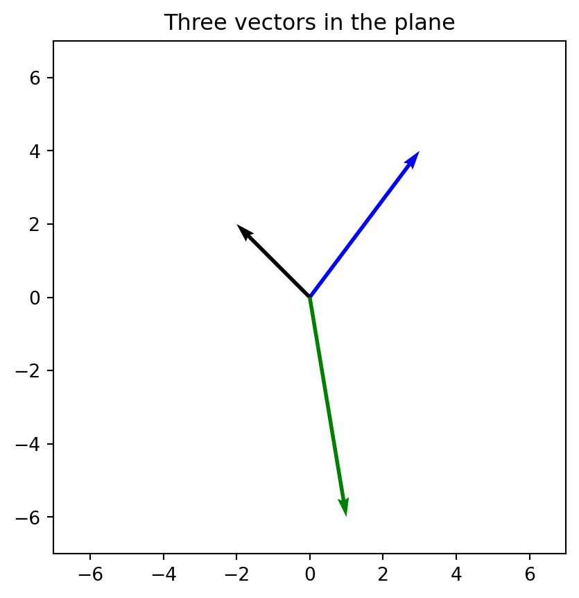
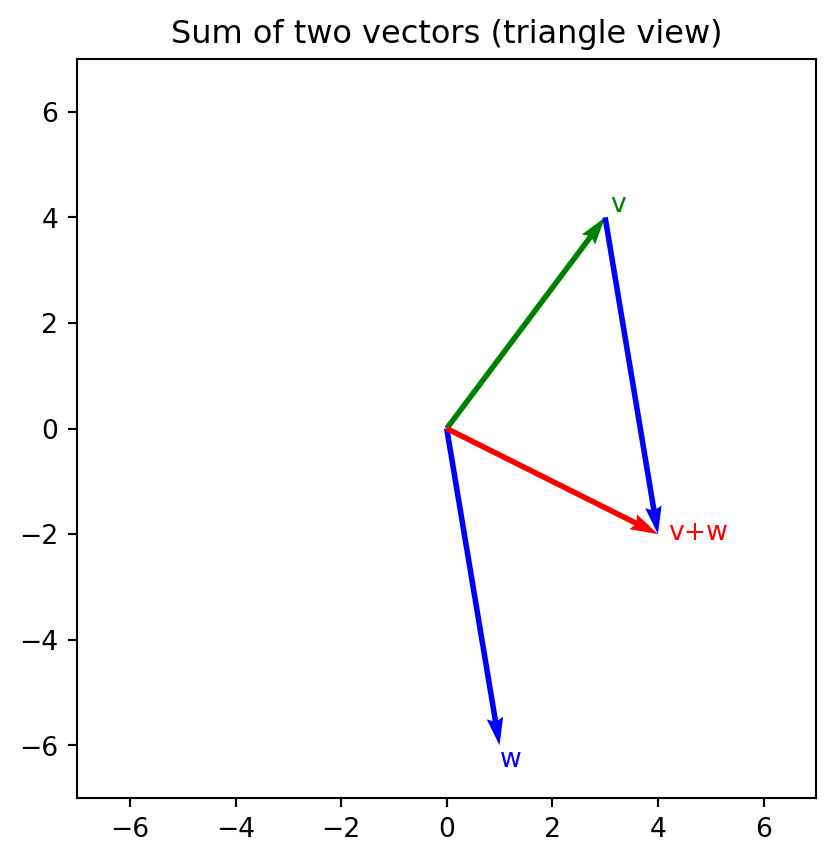
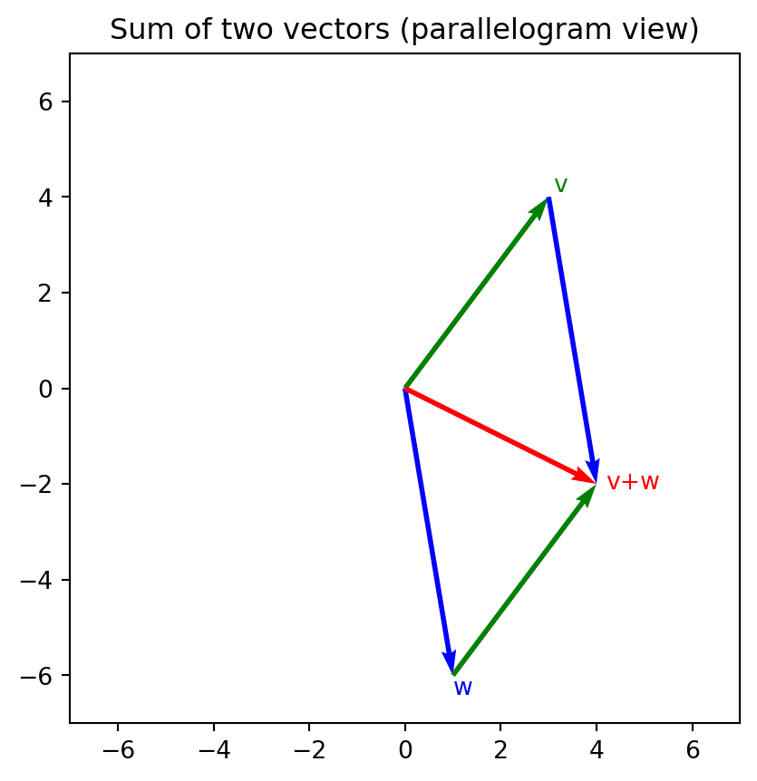
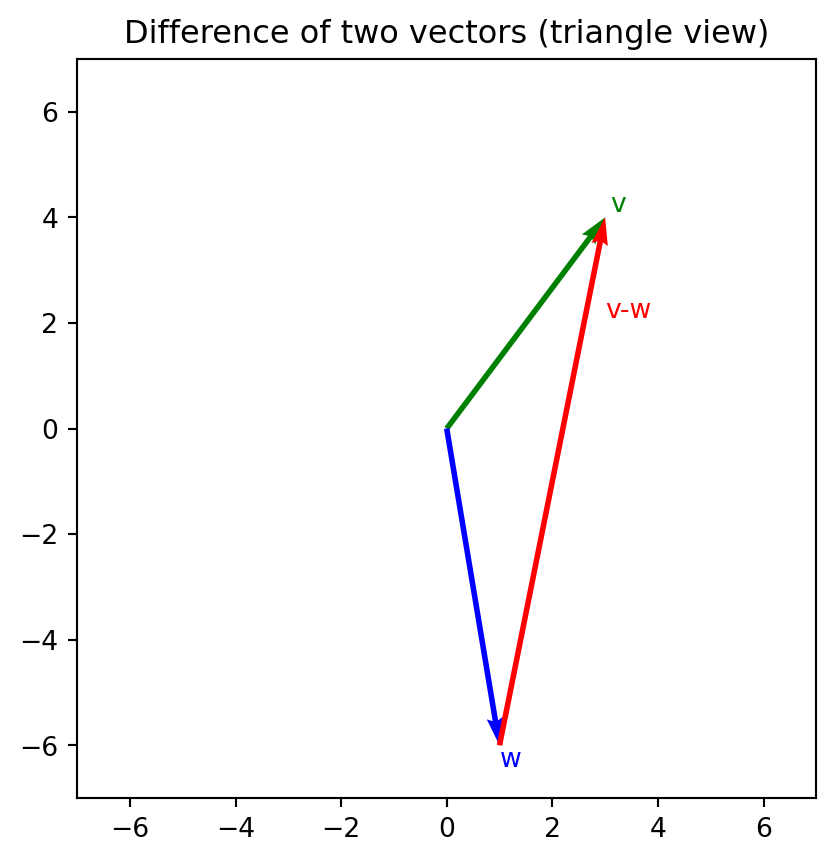
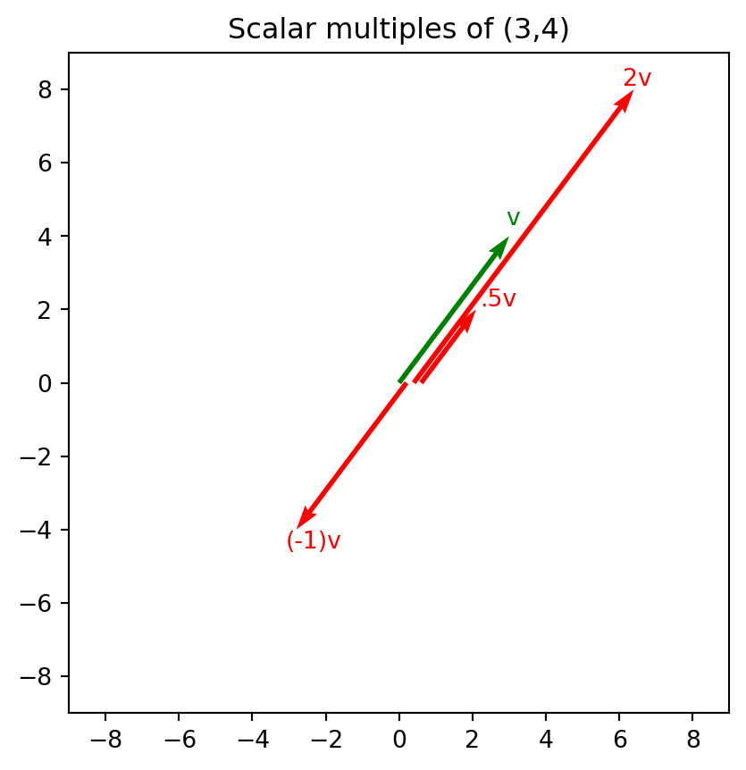
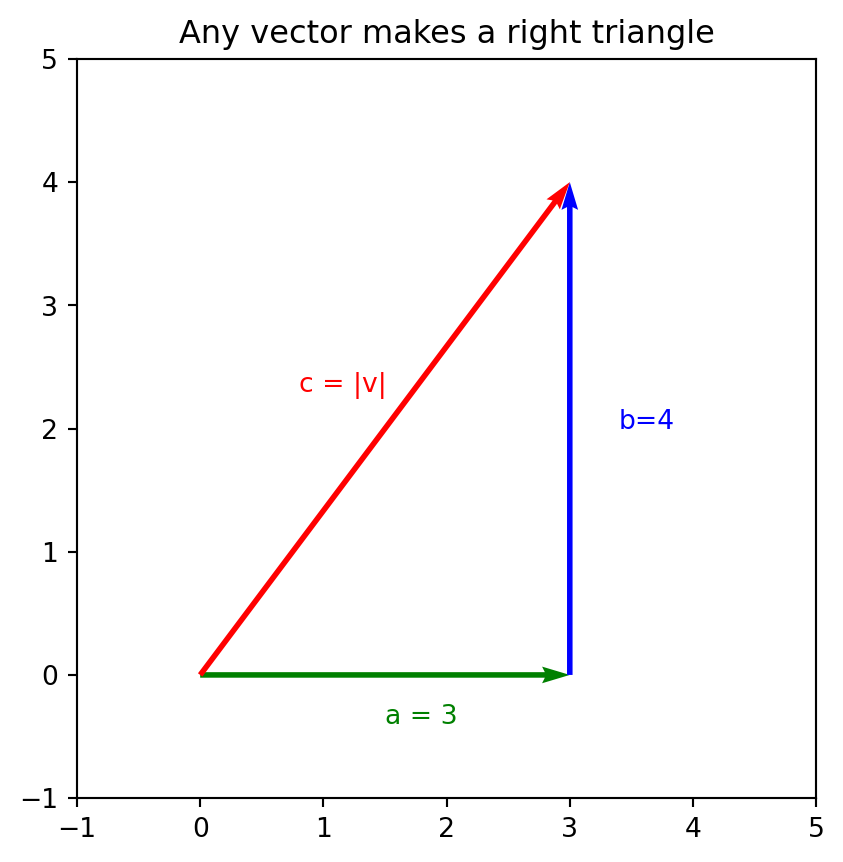
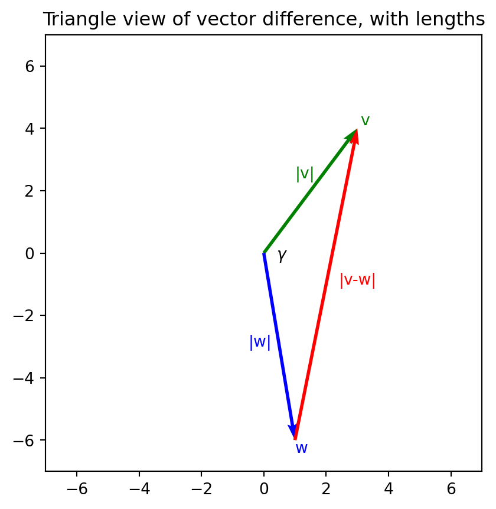

import sympy as sp
M = sp.Matrix([[1,1,1,1],[4,2,1,3],[9,3,1,-1]])
M.rref()[0]\(\displaystyle \left[\begin{matrix}1 & 0 & 0 & -3\\0 & 1 & 0 & 11\\0 & 0 & 1 & -7\end{matrix}\right]\)
Algebra, in the sense of middle/high school algebra, is the manipulation of:
subject to fixed rules of manipulation, such as
Abstract algebra, in the sense of Math 423 Modern Algebra and Math 671 Abstract Algebra, begins with a simple notion:
There are other sorts of things, besides numbers, which can be represented abstractly (e.g., “x”), added, multiplied, put in equations, and found to satisfy algebraic laws.
:::{#exm-modulo-12 .example} (Numbers modulo 12) The numbers 0, 1, 2, 3, 4, 5, 6, 7, 8, 9, 10, 11, excluding all other numbers, form a closed system which admits a form of addition modulo 12 (\(3+4=7\), \(8+9=5\)) and multiplication modulo 12 (\(3*2=6\), \(4*5=8\)), permits equation solving (\(x+5=3\) so \(x=3-5 = 10\)), and obeys basic algebraic laws.
Thus, the second word of Linear Algebra describes the methodology of algebraic manipulation of unknown quantities, particularly to solve equations, with the understanding that the objects of the equations might not be numbers.
The word “Linear,” taken literally, refers to the type of equations involved – a linear equation such as \(3x+5y+7z=12\) is one in which every term is either a constant or a constant times a variable, and the terms are simply added or subtracted. Taken more suggestively, “linear” refers more broadly to the topic of study. “Linear” means we study vectors and matrices.
As opposed to ordinary numbers such as \(-6\), \(\pi\), and \(10\), a vector has both magnitude (how big it is) and direction (which way it goes). It’s the kind of mathematical object which can represent important physical quantities, such as:
Now in two dimensions, magnitude and direction can be represented as length (\(r\)) and angle (\(\theta\)). This is the essence of polar coordinates. But expressing vectors in polar coordinates makes them very hard to compute with. In three dimensions it’s even harder to express direction (two distinct angles must be used, corresponding to latitude and longitude), and even harder to compute. Angles are not very practical.
The best way to measure vectors is by introducing a coordinate system. In three dimensions, this means we introduce three (usually perpendicular) directions, normally called the x direction, the y direction, and the z direction, together with reference units (e.g. meters) for each, and an “origin”, where we stipulate \(x=y=z=0\). Each vector is represented by three numbers telling how far it goes in each direction. This allows us to say, for example: “\(v = [1,2,5]\),” or if we prefer column vectors “\(v = \begin{bmatrix}{1\\2\\5}\end{bmatrix}\)” (Arguably, column vectors are “better” but they sure mess up the paragraph formatting!)
A physician wants to assess the health of a patient, given health history and lab work. An economist wants to predict the path of a country’s economy, given lots of macroeconomic markers. An AI expert wants to (train an AI to) classify images based on their pixels. A navigation system wants to autocorrect through a storm based on sensor inputs. In all these cases and many others, a person or system needs to make judgement based on many inputs. Often, we code these inputs as a numerical “data vector” and interpret the problem as a problem of processing that vector to weigh its inputs correctly.
In practical problems, a data vector could have dozens, hundreds, or even millions of entries. It needs to be processed in a way which is efficient and flexible. Linear Algebra provides a wide variety of tools for making the most of our data. For example, a GPU (graphical processing unit), whether it is rendering 3D graphics, mining bitcoins, or running an AI chatbot, is spending most of its processing power performing a fundamental linear algebra calculation: matrix multiplication.
Suppose I need to find a cubic function \(f(x) = ax^3 + bx^2 + cx + d\) which has some desired properties, but I don’t know the values of \(a\), \(b\), \(c\), and \(d\). Or suppose I have a story problem involving four friends’ unknown ages \(a\), \(b\), \(c\), and \(d\). I probably need to treat them as unknowns and write some equations which involve them. A subtly different attitude is to treat \(v = [a,b,c,d]\) as a single unknown vector, which bundles everything I don’t know. If I’m lucky (i.e., if the conditions are linear in a sense we’ll discuss later), the many equations involving four unknowns a through d can be translated to fewer equations (maybe even just one) involving the unknown vector \(v\). Depending on the problem, this shift of perspective can deepen the insight and lighten the work!
On the other hand, maybe a vector \(v = [6,2,8,2,4]\) is just five numbers in a row, representing nothing in particular. This perspective is more naive but also more abstract, because it includes all the possible meanings explained above. This is often the right attitude from a purely mathematical perspective.
Linear algebra is not just for undergraduates. It continues into higher mathematics with further abstractions. We accept coordinates values from alternate number systems or abstract away the coordinates themselves. Then what remains of a “vector” is a context (“vector space”) in which it can be added to other vectors and multiplied by scalars. It’s quite abstract, but it’s also incredibly useful. You can learn it all later!
Exercise 1 Let \(v = [7,4]\) and let \(w = [1,-1]\).
Exercise 2
Exercise 3 The dimension of a vector means the number of coordinates within it.
\[ax^2 + bxy + cy^2 + dx + ey + f = 0\]
If the unknown coefficients are used to represent a vector, what is the dimension of that vector?
A vector is a list of numbers, usually drawn horizontally or vertically. A matrix is a bunch of numbers in array format, extending both horizontally and vertically. A vector’s entries can be described by their numerical position (first, second, third, etc), but a matrix’s entries must be described by their coordinates (such as “first row, fourth from the left” or “third row, first entry on the left.”)
For example \[M = \begin{bmatrix}1 & 2 & 3 \\ 4 & 5 & 6 \\ 7 & 8 & 9\end{bmatrix}\] or \[N = \begin{bmatrix}10 & 0 & -10 & 17 \\ 4 & 8 & 1 & -5\end{bmatrix}\] The numbers in a matrix can be positive or negative, rational or irrational. They can be represented by specific numerals, constants, or variables. Later generalizations permit matrices to contain more exotic pseudo-numbers (usually elements of a ring or field).
A matrix is always rectangular. The size of this rectangle is called the shape of the matrix. Our matrix \(M\) above has shape \(3 \times 3\), whereas \(N\) is \(2 \times 4\). The first number describes height and the second number describes width, so \(4 \times 2\) matrix would be a different shape. When the width equals the height (\(n \times n\)), the matrix is called square.
The horizontal elements such as \([1, \, 2, \, 3]\) and \([10, \, 0, \, -10, \, 17]\) are called rows. The vertical elements such as \(\begin{bmatrix}1 \\ 4 \\ 7\end{bmatrix}\) and \(\begin{bmatrix}10 \\ 4\end{bmatrix}\) are called columns. Based on natural English meaning, it’s easy to remember that “columns” are vertical. Students need to remember that in Linear Algebra, the word “row” refers exclusively to the horizontal. Rows and columns are matrices in their own right, despite being rather flat or rather skinny. These sorts of “effectively one dimensional” matrices are also regarded as vectors, either row vectors or column vectors depending on their shape. A matrix is at once a stack of row vectors and a list of its column vectors. Both perspectives are important.
To distinguish from vectors and matrices, ordinary numbers can be called scalars.
A physicist might use a \(3 \times3\) matrix to describe a spatial orientation or rotation. The internal stress on a material under strain would also be written as a \(3\times3\) matrix.
A data scientist might use a very large matrix to hold an entire dataset. Typically, each row represents a data record (e.g. a person), and each column represents a quantity recorded about the data cases. A gradebook is a simple example. (Data scientists often include non-numerical and missing data, but we assume our matrices are filled with numbers.)
An AI researcher may build a layer of an artificial neural network with 1000 input nodes (data inputs) and 100 output nodes (data outputs). Each output node is a weighted sum of the inputs, and these weights are tabulated in a \(1000 \times 100\) matrix. The matrices in a neural network tend to be very large!
An economist may ask: Which countries import/export wheat, and how much, and to whom? The answer could be expressed as a \(195\times 195\) matrix (There are about 195 countries at time of writing. This isn’t meant to be political!), whose entries show the quantity of wheat transfered yearly from each country to each other country.
Given several unknowns \(x\), \(y\), \(z\) and several equations involving them (a System of Linear Equations or SLE), we can represent the relevant information in matrix form, called the matrix of the SLE. This helps us solve the system. More on this later.
We’ve seen that vectors can be added and subtracted, but only when their lengths agree. Similarly, matrices can be added and subtracted, entry by entry, but only when their shapes agree. For example:
\[\left[\begin{matrix}1 & 2 & 3\\4 & 5 & 6\\7 & 8 & 9\end{matrix}\right] + \left[\begin{matrix}10 & 0 & 20\\-1 & -1 & -1\\0 & 100 & 0\end{matrix}\right] = \left[\begin{matrix}11 & 2 & 23\\3 & 4 & 5\\7 & 108 & 9\end{matrix}\right]\]
but the attempted sum
\[\begin{bmatrix}1 & 2 & 3 \\ 4 & 5 & 6 \\ 7 & 8 & 9\end{bmatrix} + \begin{bmatrix}10 & 0 & -10 & 17 \\ 4 & 8 & 1 & -5\end{bmatrix} \text{ is an error.}\]
Matrices can also be multiplied by scalars in the obvious way, which doesn’t change the shape.
\[10 \left[\begin{matrix}1 & 2 & 3\\4 & 5 & 6\\7 & 8 & 9\end{matrix}\right] = \left[\begin{matrix}10 & 20 & 30\\40 & 50 & 60\\70 & 80 & 90\end{matrix}\right]\]
There is another multiplication which we’ll get to soon. It allows us to multiply a matrix by a vector or another matrix.
We have six multiplication types to master:
which all follow a unifying principle: Match and multiply corresponding parts, then sum the results. (Physicists will notice that cross product is missing. It’s special and only works in three dimensions.)
How would you multiply \(v = [1,2,3]\) by \(w = [2,5,10]\)? It’s natural to multiply \(1 * 2\), \(2 * 5\), and \(3 * 10\). The dot, or inner, product asks that we find the sum of these individual products.
\[[1,2,3] . [2,5,10] = 1 \times 2 + 2 \times 5 + 3\times 10 = 42\]
Note: - The inputs to a dot product are vectors, but the output is a scalar. - The inputs must be the same length for this to be possible.
You’ve probably seen this operation in the form of the weighted average, which is a dot product of a vector of values (for averaging) and a vector of weights.
We do not sum up these answers. Rather, the outer product is the matrix of nine products itself: \[ [1,2,3] \otimes [2,5,10] = \begin{bmatrix} 2 &5 &10 \\ 4 &10 &20 \\ 6 &15 &30 \\ \end{bmatrix} \]
Notes: 1. The outer product has vector inputs but a matrix output. 2. Outer product is possible even if the input vectors have different lengths. In this case the output will be a “rectangular” (nonsquare) matrix. 3. The vector \(v\), which was on the left in the expression “\(v \otimes w\)” is still to the left as row headers. They haven’t swapped positions. This matters because \(v \otimes w\) and \(w \otimes v\) are usually different. We say that outer product is not commutative.
An implicit product is any product expressed without writing an explicit multiplication symbol. For example, normal multiplication \(3(x+2)\) or the scalar multiplication \(3v\). The expression “\(3\sin(\pi x)\)” has two implicit products. When vectors \(v\) and \(w\) are multiplied by an implicit product, we have rules of interpretation, depending on whether \(v\) and \(w\) are row or column vectors.
The remaining products will combine the ideas of outer product and inner product in various ways.
Suppose we want to multiply a matrix by a vector:
\[\begin{bmatrix} 1 & 2 & 0 \\ 4 & -2 & 10 \end{bmatrix} \begin{bmatrix}5 \\ 2 \\ 1\end{bmatrix} = ?\]
We begin by putting the matrix into position as row headers, and the vector into position as column header:
\[ \begin{matrix} & \begin{bmatrix}5 \\ 2 \\ 1\end{bmatrix}\\ \begin{bmatrix} 1 & 2 & 0 \\ 4 & -2 & 10 \end{bmatrix} & \begin{bmatrix}?\\?\end{bmatrix} \end{matrix} \]
Since we apparently have two rows and only one column, there are two spots to fill in. If this is to be a multiplication table, we must somehow multiply the entire row header \([1,2,0]\) by the column header \(\begin{bmatrix}5 \\ 2 \\ 1\end{bmatrix}\). There’s only one way to do it, namely dot product: \(1 \times 5 + 2 \times 2 + 0 \times 1 = 9\). The other dot product yields \(4 \times 5 + -2 \times 2 + 10 \times 1 = 26\). We conclude
\[\begin{bmatrix} 1 & 2 & 0 \\ 4 & -2 & 10 \end{bmatrix} \begin{bmatrix}5 \\ 2 \\ 1\end{bmatrix} = \begin{bmatrix}9 \\26 \end{bmatrix}\]
In short, to multiply \(M\) by \(v\), form a vector whose entries are dot products of the rows of \(M\) with \(v\).
Notes: 1. It matters that \(M\) was on the left and stayed on the left. \(Mv\) and \(vM\) are not the same. 2. The required inner products were only possible because \(v\) was a column vector, exactly as long as the rows of \(M\). If these conditions are not met, then the product \(Mv\) is an error.
Suppose we want to multiply a vector by a matrix:
\[\begin{bmatrix}5 & 2 \end{bmatrix} \begin{bmatrix} 1 & 2 & 0 \\ 4 & -2 & 10 \end{bmatrix} = ?\]
Now the vector is on the left, so it forms a single row header, whereas the matrix is on the right and moves to become column headers:
\[ \begin{matrix} & \begin{bmatrix} 1 & 2 & 0 \\ 4 & -2 & 10 \end{bmatrix} \\ \begin{bmatrix}5 & 2\end{bmatrix} & \begin{bmatrix}? & ? & ?\end{bmatrix} \end{matrix} \]
This leaves room for three products, each of which is again a (row)(column) inner product. We compute \(5 \times 1 + 2 \times 4 = 13\), etc., and find:
\[\begin{bmatrix}5 & 2 \end{bmatrix} \begin{bmatrix} 1 & 2 & 0 \\ 4 & -2 & 10 \end{bmatrix} = \begin{bmatrix}13 & 6 & 20 \end{bmatrix}\]
Note: 1. This works only when \(v\) is a row vector, whose length matches the length of \(M\)’s columns. 2. \(Mv\) and \(vM\) are completely different operations.
This case is the most complicated, but at this point it shouldn’t be a surprise.
How can we multiply a matrix by another matrix?
\[ \begin{bmatrix} 1 & 2 & 0 \\ 4 & -2 & 10 \end{bmatrix} \begin{bmatrix} 1&2&3 \\ 4&5&6 \\ 7&8&9 \end{bmatrix} = ??? \]
As usual, we place the matrices into a table (without letting them change places):
\[ \begin{matrix} & \begin{bmatrix} 1&2&3 \\ 4&5&6 \\ 7&8&9 \end{bmatrix}\\ \begin{bmatrix} 1 & 2 & 0 \\ 4 & -2 & 10 \end{bmatrix} & \begin{bmatrix}? & ? & ? \\? & ? & ?\end{bmatrix} \end{matrix} \]
We infer the number of calculations needed by counting rows and columns. Each question mark is determined by multiplication, which as usual means a (row)(column) inner product. For example, the upper left one is \(1 \times 1 + 2 \times 4 + 0 \times 7 = 9\). I made the computer do the arithmetic in the code cell below, but the answer is:
\[ \begin{bmatrix} 1 & 2 & 0 \\ 4 & -2 & 10 \end{bmatrix} \begin{bmatrix} 1&2&3 \\ 4&5&6 \\ 7&8&9 \end{bmatrix} = \begin{bmatrix}9 & 12 & 15\\ 82 & 98 & 114\end{bmatrix} \]
Notes:
Any (row)(column) product is interpreted as dot product and requires equal length inputs. Any other case is expanded into a multiplication table, whose individual entries are calculated as (row)(column) products. These component products still must be equal length inner products.
Use the matrices \(M\), \(N\), and \(v\) below for the next few problems: \[ M = \begin{bmatrix}1&2\\3&4\end{bmatrix} \, \text{ and } \, N = \begin{bmatrix}5&0\\-1&10\end{bmatrix} \, \text{ and } \, w = \begin{bmatrix} 5 & 100 \end{bmatrix} \text{ and } \, v = \begin{bmatrix}4\\5 \end{bmatrix}\]
Exercise 4 Of the products \(wv\) and \(vw\), one should be interpreted as an inner product and one as an outer product. Which is which, and why? Calculate both.
Exercise 5 Explain why the implicit product \(vv\) is a notational error. Nevertheless \(v.v\) and \(v \otimes v\) are possible. Calculate both.
Exercise 6 Calculate \(MN\). Show work.
Exercise 7 Calculate \(Nv\). Show work.
Exercise 8 Multiply \(MN\) (from Exercise 6) by \(v\), producing \((MN)v\). Show work.
Exercise 9 Multiply \(M\) by \(Nv\) (from Exercise 7), producing \(M(Nv)\). Show work.
Exercise 10 Calculate \(Mv\), \(Nv\), and \((M+N)v\). (For \((M+N)v\), first add the matrices, then multiply the result by \(v\).) Are they related as you would expect?
Exercise 11 Suppose that \(A\) and \(B\) are matrices. The shape of \(A\) is \(4 \times 5\). If the product \(AB\) is possible, what shape(s) could \(B\) have?
Exercise 12 Suppose \(D = EF\), where \(E\) is \(10 \times 3\) and \(F\) is \(3 \times 20\). What is the shape of \(D\)? How many entries altogether does \(D\) have? What about \(E\)? What about \(F\)? Would it be faster to read off all of the entries of both \(E\) and \(F\), or all of the entries of \(D\)?
We introduce three key algorithms which underpin both practical and theoretical linear algebra. They are Gaussian Elimination, Gauss-Jordan Elimination, and the Echelon Rank Factorization.
Gaussian elimination is a technique which gradually replaces a matrix with a simpler version. It is based on three simple row operations:
In Gaussian Elimination, we use row operations to simplify the matrix, with the following general goals:
When these goals are achieved, we say the matrix is in row echelon form. (“Echelon” means “staircase,” referring to the stairstepped positions of the pivots.)
Let’s see the process in action:
\[M = \begin{bmatrix} 1&2&3&12\\ 4&5&6&24\\ 7&8&9&36\\ \end{bmatrix}\]
The top left entry is already 1. We box it to highlight that it is a pivot, and plan two more row operations:
\[\begin{bmatrix} \boxed{1}&2&3&12\\ 4&5&6&24\\ 7&8&9&36\\ \end{bmatrix}\begin{matrix}\\-4R1\\-7R1\end{matrix}\]
This notation indicates we mean to change row 2 by subtracting quadruple row 1, and change row 3 by subtracting seven times row 1. Let’s do it:
\[\begin{bmatrix} \boxed{1}&2&3&12\\ 0&-3&-6&-24\\ 0&-6&-12&-48\\ \end{bmatrix}\begin{matrix} \\ *(-1/3) \\ \\ \end{matrix}\]
The first column is roses, but the second row’s leading entry is -3, where we want a pivot. We multiply by \({-1}/{3}\) so that the second row will begin with 1. There’s no point trying to produce a pivot in row 3, so we leave that row alone for now.
\[\begin{bmatrix} \boxed{1}&2&3&12\\ 0&\boxed{1}&2&8\\ 0&-6&-12&-48\\ \end{bmatrix}\begin{matrix} \\ \\ + 6R2 \end{matrix}\]
To achieve a zero under our new pivot, we modify row 3 by adding six times row 2. This creates some unexpected zeroes.
\[\begin{bmatrix} \boxed{1}&2&3&12\\ ☺ &\boxed{1}&2&8\\ ☺ &☺ &0&0\\ \end{bmatrix}\]
At this point:
We have achieved the desired goal. Gaussian Elimination is complete.
Gauss-Jordan Elimination is a simple extension of Gaussian Elimination. It continues the process to accomplish one more goal, namely that the entries above the pivots are likewise zero. This can be accomplished using a few more row operations.
In our example, only one more is required:
\[\begin{bmatrix} \boxed{1}&2&3&12\\ ☺ &\boxed{1}&2&8\\ ☺ &☺ &0&0\\ \end{bmatrix} \begin{matrix} -2R2 \\ \\ \\ \end{matrix} \]
which yields:
\[\begin{bmatrix} \boxed{1}&☺&-1&-4\\ ☺ &\boxed{1}&2&8\\ ☺ &☺ &0&0\\ \end{bmatrix} \]
The matrix retains some peculiar entries, but we have completed Gauss-Jordan Elimination. We call this reduced row echelon form.
This technique feels very different but it’s based on the same ideas and produces similar information. Roughly speaking, we gradually erode the matrix by subtracting outer products from it, whereupon it can be rewritten as the sum of those outer products, or alternatively as the product of two simpler matrices.
It’s best to work by example. We use the matrix from the previous example so that we can compare results.
\[ M = \begin{bmatrix} 1&2&3&12\\ 4&5&6&24\\ 7&8&9&36\\ \end{bmatrix}\]
We wish to approximate \(M\) with an outer product. As a rule, we can hope to match at least one row and one column of \(M\) with an outer product. We select the upper left \(1\) as anchor value. Next we copy its entire column. Finally, we choose entries for a row vector so that the outer product created will at least agree with the row and column of interest:
\[\begin{matrix} (Outer_1) & \begin{bmatrix} \boxed{1} & 2 & \phantom{6}3 & 12 \\ \end{bmatrix} \\ \begin{bmatrix}\boxed{1} \\ 4 \\ 7 \end{bmatrix} & \begin{bmatrix} 1&2&3&12 \\ 4&8&12&48 \\ 7&14&21&84 \\ \end{bmatrix} \end{matrix} \]
Notice that this isn’t \(M\), but it matches the chosen row and column, by design. We’ve boxed two ones, which will act like pivots. If the top left term were not already \(1\), we would have needed an adjustment.
Considering this to be an approximation of \(M\), we subtract it and focus on what’s left:
\[M - Outer_1 = \begin{bmatrix} 0&0&0&0\\ 0& -3 & -6 & -24 \\ 0& -6 & -12 & -48 \\ \end{bmatrix}\]
These numbers should look familiar.
Next we choose our next anchor, the top left \(-3\). In order to match its row and column with an outer product, we begin by copying its column verbatim (left, below). Then we choose values of the chosen row to match the intended value \(-3, -6, -24\). Given the -3 multiplier, these values need to be \(1, 2, 8\):
\[\begin{matrix} (Outer_2) & \begin{bmatrix} 0 & \boxed{1} & \phantom{-}2 & \phantom{-}8 \\ \end{bmatrix} \\ \begin{bmatrix}0 \\ \boxed{-3} \\ -6 \end{bmatrix} & \begin{bmatrix} 0 & 0 & 0 & 0 \\ 0 & -3 & -6 & -24 \\ 0 & -6 & -12 & -48 \\ \end{bmatrix} \end{matrix} \]
Notes:
When the two outer products are subtracted from \(M\), we get zero. It follows that \(M\) is the sum of two outer products:
\[M = \begin{bmatrix}1 \\ 4 \\ 7 \end{bmatrix} \begin{bmatrix} 1 & 2 & 3 & 12 \\ \end{bmatrix} + \begin{bmatrix}0 \\ -3 \\ -6 \end{bmatrix} \begin{bmatrix} 0 & 1 & 2 & 8 \\ \end{bmatrix}\]
Equivalently, \(M\) is itself a product of two new matrices:
\[ M = \begin{bmatrix} 1&2&3&12\\ 4&5&6&24\\ 7&8&9&36\\ \end{bmatrix} = \begin{bmatrix}\boxed{1} & 0 \\ 4 & \boxed{-3} \\ 7 & -6 \end{bmatrix} \begin{bmatrix} \boxed{1} & 2 & 3 & 12 \\ 0 & \boxed{1} & 2 & 8 \\ \end{bmatrix} = CR \]
Notes:
The righthand factor matrix \(R\) is in row echelon form. In fact, it is the final result of Gaussian elimination (omitting any zero rows). With care this can always be achieved. This is why we present the three algorithms together.
The lefthand factor matrix \(C\) is not in row echelon form. It is nearly in “column echelon form”, but its pivots are usually not 1. Sometimes (if row interchanges are necessary for Gaussian elimination), its rows may be out of order for column echelon form. See the next example.
The factors of \(M\) are smaller in shape than \(M\) (\(3 \times 2\) and \(2 \times 3\)), so the rank factorization is a kind of simplification of \(M\). If they were any smaller, \(M\) would be an outer product of two vectors, which it certainly isn’t. We’ll see later that the rank factorization always produces factors as small as they could be.
In this example the process took two steps. We say the rank of \(M\) is two. This two is shown both in the fact that \(M\) is the sum of two outer products, and the fact that that \(M\) is factored into a product of two matrices with inner dimension two. The rank of a matrix is perhaps the most important measure of its complexity.
The “Rank Echelon Factorization” is similar, but not identical to G. Strang’s “CR decomposition.” It’s connected to the “LU decomposition.” It can be called a “rank factorization” but it’s far more specific.
Consider a much larger example, with a few more complications.
We apply Rank-Echelon to the matrix:
\[M = \left[\begin{matrix}3 & 6 & 6 & -9 & 15\\-3 & -6 & -6 & 11 & 5\\2 & 4 & 4 & -5 & 20\\2 & 4 & 9 & -14 & 45\\4 & 8 & 14 & -21 & 68\end{matrix}\right]\] Treating the top left \(3\) as anchor… Construct the Outer Product: \[ \begin{array}{c|ccccc} & \boxed{1} & 2 & 2 & -3 & 5 \\ \hline \boxed{3} & 3 & 6 & 6 & -9 & 15 \\ -3 & -3 & -6 & -6 & 9 & -15 \\ 2 & 2 & 4 & 4 & -6 & 10 \\ 2 & 2 & 4 & 4 & -6 & 10 \\ 4 & 4 & 8 & 8 & -12 & 20 \\ \end{array} \] Subtract: \[ \begin{bmatrix} \class{matrix-anchor}{3} & 6 & 6 & -9 & 15 \\ -3 & -6 & -6 & 11 & 5 \\ 2 & 4 & 4 & -5 & 20 \\ 2 & 4 & 9 & -14 & 45 \\ 4 & 8 & 14 & -21 & 68 \end{bmatrix} - \left[\begin{matrix}3 & 6 & 6 & -9 & 15\\-3 & -6 & -6 & 9 & -15\\2 & 4 & 4 & -6 & 10\\2 & 4 & 4 & -6 & 10\\4 & 8 & 8 & -12 & 20\end{matrix}\right] = \left[\begin{matrix}0 & 0 & 0 & 0 & 0\\0 & 0 & 0 & 2 & 20\\0 & 0 & 0 & 1 & 10\\0 & 0 & 5 & -8 & 35\\0 & 0 & 6 & -9 & 48\end{matrix}\right] \]
Continue with anchor \(5\). It’s the highest nonzero entry in the leftmost nonzero column.
Construct the Outer Product: \[ \begin{array}{c|ccccc} & 0 & 0 & \boxed{1} & - \frac{8}{5} & 7 \\ \hline 0 & 0 & 0 & 0 & 0 & 0 \\ 0 & 0 & 0 & 0 & 0 & 0 \\ 0 & 0 & 0 & 0 & 0 & 0 \\ \boxed{5} & 0 & 0 & 5 & -8 & 35 \\ 6 & 0 & 0 & 6 & - \frac{48}{5} & 42 \\ \end{array} \] Subtract: \[ \begin{bmatrix} 0 & 0 & 0 & 0 & 0 \\ 0 & 0 & 0 & 2 & 20 \\ 0 & 0 & 0 & 1 & 10 \\ 0 & 0 & \class{matrix-anchor}{5} & -8 & 35 \\ 0 & 0 & 6 & -9 & 48 \end{bmatrix} - \left[\begin{matrix}0 & 0 & 0 & 0 & 0\\0 & 0 & 0 & 0 & 0\\0 & 0 & 0 & 0 & 0\\0 & 0 & 5 & -8 & 35\\0 & 0 & 6 & - \frac{48}{5} & 42\end{matrix}\right] = \left[\begin{matrix}0 & 0 & 0 & 0 & 0\\0 & 0 & 0 & 2 & 20\\0 & 0 & 0 & 1 & 10\\0 & 0 & 0 & 0 & 0\\0 & 0 & 0 & \frac{3}{5} & 6\end{matrix}\right] \]
The final anchor will be the \(2\).
Construct the Outer Product: \[ \begin{array}{c|ccccc} & 0 & 0 & 0 & \boxed{1} & 10 \\ \hline 0 & 0 & 0 & 0 & 0 & 0 \\ \boxed{2} & 0 & 0 & 0 & 2 & 20 \\ 1 & 0 & 0 & 0 & 1 & 10 \\ 0 & 0 & 0 & 0 & 0 & 0 \\ \frac{3}{5} & 0 & 0 & 0 & \frac{3}{5} & 6 \\ \end{array} \] Subtract: \[ \begin{bmatrix} 0 & 0 & 0 & 0 & 0 \\ 0 & 0 & 0 & \class{matrix-anchor}{2} & 20 \\ 0 & 0 & 0 & 1 & 10 \\ 0 & 0 & 0 & 0 & 0 \\ 0 & 0 & 0 & \frac{3}{5} & 6 \end{bmatrix} - \left[\begin{matrix}0 & 0 & 0 & 0 & 0\\0 & 0 & 0 & 2 & 20\\0 & 0 & 0 & 1 & 10\\0 & 0 & 0 & 0 & 0\\0 & 0 & 0 & \frac{3}{5} & 6\end{matrix}\right] = \left[\begin{matrix}0 & 0 & 0 & 0 & 0\\0 & 0 & 0 & 0 & 0\\0 & 0 & 0 & 0 & 0\\0 & 0 & 0 & 0 & 0\\0 & 0 & 0 & 0 & 0\end{matrix}\right] \]
We have subtracted three outer products to reach \(0\), so the original \(M\) is the sum of them. As before, this can be expressed in a matrix equation.
\[\left[\begin{matrix}3 & 6 & 6 & -9 & 15\\-3 & -6 & -6 & 11 & 5\\2 & 4 & 4 & -5 & 20\\2 & 4 & 9 & -14 & 45\\4 & 8 & 14 & -21 & 68\end{matrix}\right] = \begin{bmatrix}\boxed{3}&0&0 \\ -3&0&\boxed{2} \\2&0&1 \\ 2&\boxed{5}&0\\ 4&6&\frac{3}{5} \end{bmatrix} \begin{bmatrix} \boxed{1}&2&2&-3&5\\0&0&\boxed{1}&-\frac{8}{5}&7 \\ 0&0&0&\boxed{1}&10 \end{bmatrix}\]
Here the right factor is in row echelon form. The left factor is certainly not, but it does have some commonalities. Notice that to the right of the \(\boxed{3}\), we have only zeroes. This is because our first operation completely zeroed the top row. Right of \(\boxed{5}\), we have another zero for the same reason. In summary, the left factor satisfies:
As we’ll see much later, these two features are enough to guarantee the solvability of certain important equations.
Exercise 13 Using this matrix: \[M = \begin{bmatrix} 2 & 4 & 8 & 6 \\ -1 & -4 & 2 & 11 \\ -1 & 0 & -10 & 4 \end{bmatrix} \]
Exercise 14 As above (Exercise 13), using the matrix: \[ N = \begin{bmatrix} 3 & 12 & 9 & 6 \\ 2 & 10 & 12 & 8 \\ 5 & 22 & 22 & 14 \end{bmatrix} \]
Exercise 15 As above (Exercise 13), using the matrix: \[ P = \begin{bmatrix} 4 & 6 & 4 \\ 6 & 12 & 8 \\ 8 & 12 & 6 \\ 12 & 30 & 20 \\ 20 & 30 & 12 \\ \end{bmatrix} \]
An SLE, or System of Linear Equations is a collection of (linear – see below) equations in several variables. Solving a system means using several equations to find the values of several variables at once.
In every case we have two or three unknowns satisfying multiple equations. All of the equations can be expressed in the form: weighted sum of unknowns = value. This is what we mean by linear equations.
Example 1 We want to introduce a general technique for solving an SLE. Suppose we have three equations in three unknowns:
\[ \begin{matrix} x + 2y + 3z =& 12 \\ 4x + 5y + 6z =& 24 \\ 7x + 8y + 9z =& 36 \\ \end{matrix} \]
Questions:
If not, then we can apply row operations before attempting to solve. We can choose either Gaussian or Gauss-Jordan Elimination.
Before starting, we repackage our equations in matrix form:
\[M = \begin{bmatrix} 1&2&3&12\\ 4&5&6&24\\ 7&8&9&36\\ \end{bmatrix}\]
What a coincidence! This is the matrix from our Gauss-Jordan elimination example. The final result of elimination is:
\[\begin{bmatrix} \boxed{1}&☺&-1&-4\\ ☺ &\boxed{1}&2&8\\ ☺ &☺ &0&0\\ \end{bmatrix} \]
Rewriting in equation form shows what we’ve gained:
\[ \begin{matrix} x - z = -4 \\ y+2z = 8 \\ 0 = 0 \\ \end{matrix} \]
The third equation is useless, and the first two don’t carry enough information to determine \(z\). In fact, for any choice of \(z\), values of \(x\) and \(y\) can be easily determined which make the equation true. We say this system is underdetermined and has infinitely many solutions. Notice that the “free” variable \(z\) is the variable associated to the column which lacks a pivot. As a rule, columns with pivot correspond to variables whose values are determined, and columns without pivot correspond to variables which can be set to any value.
Example 2
A quadratic equation \(f(x) = ax^2+bx+c\) has \(f(1) = 1\), \(f(2) = 3\), and \(f(3) = -1\). Find \(a\), \(b\), and \(c\).
It’s less clear that we have three equations. Plugging in the given points, we have
\[\begin{matrix} a*1^2 + b*1 + c = 1\\ a*2^2 + b*2 + c = 3 \\ a*3^2 + b*3 + c = -1\\ \end{matrix} \]
which we quickly repackage in matrix form:
\[\begin{bmatrix} 1&1&1&1\\ 4&2&1&3\\ 9&3&1&-1\\ \end{bmatrix} \]
Let’s cheat a bit and get the computer to row reduce:
import sympy as sp
M = sp.Matrix([[1,1,1,1],[4,2,1,3],[9,3,1,-1]])
M.rref()[0]\(\displaystyle \left[\begin{matrix}1 & 0 & 0 & -3\\0 & 1 & 0 & 11\\0 & 0 & 1 & -7\end{matrix}\right]\)
After Gauss-Jordan Elimination, the reduced row echelon form is found: \[\begin{bmatrix}1 & 0 & 0 & -3\\0 & 1 & 0 & 11\\0 & 0 & 1 & -7\end{bmatrix}\]
Notice we now have three pivots. This matrix has rank 3. Converting back to equation form yields:
\[\begin{matrix} a = -3\\ b = 11\\ c = -7\\ \end{matrix} \]
which leaves no mystery. The function is \(f(x) = -3x^2 + 11x -7\).
As a check on our work, we’ll code the function and evaluate at the key x values:
def f(x):
return -3*x*x + 11*x - 7
f(1),f(2),f(3)(1, 3, -1)…as prescribed.
Example 3 Sulphur can react with nitric acid to make sulphuric acid, nitrogen dioxide, and water. Chemists often need to know how many instances of each molecule are involved in the reaction. Figuring this out is called balancing the reaction. Specifically, we need to find integers v, w, x, y, z in the equation below.
\[v S + w HNO_3 \to x H_2SO_4 + y NO_2 + z H_2O\]
Chemists use many subtle techniques to solve these problems. In contrast, we plan to clobber this puzzle with the power tools of linear algebra.
Since this is a normal chemical reaction without nuclear fissions or fusions, every element is preserved in count. This means we have…
We may get nervous to see five unknowns and only four equations, but let’s continue. First we write an SLE with variables on the left, organized into columns: \[\begin{matrix} v && - x&& &= & 0\\ &w & &- y& &=& 0\\ &-3w &+4x&+2y&+z &=& 0\\ &-w & +2x && +2z &=&0\\ \end{matrix} \]
Notice that the right-hand-side constants are all zero. This is called a homogeneous SLE.
We convert to matrix form:
\[M = \begin{bmatrix}1 & 0 & -1 & 0 & 0 & 0\\0 & 1 & 0 & -1 & 0 & 0\\0 & -3 & 4 & 2 & 1 & 0\\0 & -1 & 2 & 0 & 2 & 0\end{bmatrix}\]
We use Gauss-Jordan elimination to convert to reduced row echelon form, or rather we make the computer do it:
import sympy as sp
M = sp.Matrix([[1,0,-1,0,0,0],[0,1,0,-1,0,0],[0,-3,4,2,1,0],[0,-1,2,0,2,0]])
M.rref()[0]\(\displaystyle \left[\begin{matrix}1 & 0 & 0 & 0 & - \frac{1}{2} & 0\\0 & 1 & 0 & 0 & -3 & 0\\0 & 0 & 1 & 0 & - \frac{1}{2} & 0\\0 & 0 & 0 & 1 & -3 & 0\end{matrix}\right]\)
… and convert back to equations:
\[\begin{matrix} v = z/2\\ w = 3z\\ x = z/2\\ y = 3z\\ \end{matrix} \]
As before, a solution can be found for any conceivable choice of z, even \(z=0\). (To be fair, \(z=0\) represents the usual amount of nitric acid being converted to sulphuric acid in any given test tube!) But we want a nontrivial solution without half-atoms, so we choose \(z=2\). This gives the balanced reaction equation:
\[1 S + 6 HNO_3 \to 1 H_2SO_4 + 6 NO_2 + 2 H_2O\]
It’s worth checking that each side of the equation has 1 S, 6 N, 18 O, and 6 H.
Gauss-Jordan elimination is a powerful, universal, and fast method for simplifying a matrix. It’s often worth bending over backwards to repackage problems as SLE’s, and further translate them to matrix form in order to apply elimination, either by hand or by computer. With a bit of experience, solving a system of ten linear equations in ten variables is no more challenging than a data entry chore. On a computer, solving for millions of variables is feasible.
Let’s solve some SLE’s by hand and by computer.
Exercise 16 Polly’s Precise Produce sells precisely calibrated fruit. Every apple is \(180\) grams, and every orange is \(150\) grams. You like apples and oranges, so you buy 20 altogether. They weigh \(3150\)g. How many of each did you buy?
Exercise 17 Find a cubic function (an equation of the form \(y=ax^3+bx^2+cx+d\)) through the points \((1,3)\) and \((3,2)\), \((6,4)\), and \((7,10)\).
Exercise 18 Heat has a tendency to spread out uniformly over materials, so that every part of an object will eventually reach the same temperature. If one part of an object is kept warmer, and another part is kept colder, this uniformity cannot occur, but the object nevertheless reaches a kind of equilibrium, in which, roughly speaking, the temperature of each part of the material is approximately the average of the temperatures of the surrounding parts. Naturally, the parts directly heated or cooled are exceptions to this averaging rule.
Consider a \(4 \times 4\) checkerboard. Each square has some temperature, and we assume for simplicity that the temperature does not vary within an individual square. If the top left and bottom right squares are kept cool (say, \(0^\circ\)C), while the top right and bottom left squares are kept warm (say \(99^\circ\)C), we expect each of the twelve other squares will reach an equilibrium temperature. Each of the four interior squares will reach a temperature which is the average of the temperatures of its four neighbors, while each of the eight edge squares will reach a temperature which is the average of its three neighbors. (The four corner squares will remain fixed at \(0^\circ\)C and \(99^\circ\)C.) What will be the temperature of each square when the checkerboard reaches this equilibrium state?
Exercise 19 Fill in the blanks to balance the reaction:
\[\underline{\hspace{1cm}} {H_3PO_4} + \underline{\hspace{1cm}} {Ca(OH)_2 \to } \underline{\hspace{1cm}} {Ca_3(PO_4)_2} + \underline{\hspace{1cm}} {H_2O}\]
Solutions for professors
In this section we take the physicist’s perspective that a vector \(v=[3,4]\) is not merely a short list of numbers, but a quantity with direction and magnitude. We think of vectors either as locations in the x-y plane, or as directed arrows, from the origin to that location. So vectors “look like” arrows in 2D or 3D space:

How does geometry help us understand vector operations? How does linear algebra help us understand geometric relationships?
Question 1: How is \(v+w\) geometrically predicted from \(v\) and \(w\)? Suppose we have vectors \(v = [3,4]\), \(w = [1,-6]\), and their sum \(v+w = [4, -2]\). What is their geometric relationship?
If we starting from \([0,0]\), we can move 3 units right and 4 up, arriving at v. If from there we move 1 unit right and 6 down, we will arrive at \([4,-2]\). This suggests we need to redraw \(w\) so that its base point is at the endpoint of \(v\), then follow it. If we’ve do this we have a triangle rule for vector sum:

But we could just as well have transported \(v\) to the head of the vector \(w\). If we do this, which leads us to the “parallelogram rule”, because it creates a parallelogram in red and blue:

If \(v+w\) is best pictured by transporting the tail of \(w\) to the head of \(v\), what about \(v-w\)? We already know that \((v-w)+w = v\), so it follow that \((v-w)\) is the vector which, when placed at the head of \(w\), reaches to \(v\). That is, simply connect the head of \(w\) to the head of \(v\):

Multiplying \(v\) by a scalar multiple has a simple geometry – just scale the length and leave the direction unchanged. If the scalar is negative, the direction reverses.

You probably know the Pythagorean Theorem:
In a right triangle with legs \(a\) and \(b\) and hypotenuse \(c\), \[c^2 = a^2 + b^2\]
This theorem applies to any triangle whose angle at \(C\) (labeled \(\gamma\)) is right (i.e., \(90^\circ\)).

(Image source: Wikipedia)
Less well known is the Law of Cosines, which adds a correction term and works even when the angle is not right:
\[c^2 = a^2 + b^2 - 2ab \cos(\gamma)\]
The proof is pretty easy using the Pythagorean Theorem itself and a bit of trigonometry. See the Law of Cosines on Wikipedia
What does all this have to do with vectors? A vector \(v = [3,4]\) records a horizontal displacement (3 right) and a vertical displacement (4 up), which are always perpendicular. The Pythagorean theorem applies to the triangle made up of these individual displacements:

\[c^2 = 3^2 + 4^2\]
where \(c\) is just the length of \(v\) itself. Moreover the right hand side \(3 \times 3 + 4 \times 4\) is nothing more than the dot product of \(v\) with itself: \(v.v\). In general:
The square length of \(v\) is \(v.v\)
Notation: We write \(|v|\) for the length of the vector \(v\). In this notation we write: \(|v|^2 = v.v\), or \(|v| = \sqrt{v.v}\)
Remarkably, this rule works not only in two dimensions, but in three and even more.
Recall: Any two vectors \(v\) and \(w\) extending from the origin form two sides of a triangle whose third side is \(v-w\).

If we apply the length formula to \(v-w\) and expand, a remarkable thing happens:
\[|v-w|^2 = (v-w).(v-w) = v.v - w.v - v.w + w.w = v.v - 2v.w + w.w = |v|^2 + |w|^2 - 2v.w\]
Notes: Most linear algebra products are not commutative, but dot product is. This justifies combining w.v with v.w into one term.
So: \[|v-w|^2 = |v|^2 + |w|^2 - 2(v.w)\]
But the law of cosines applies to any triangle, so we also have:
\[|v-w|^2 = |v|^2 + |w|^2 - 2|v||w| \cos(\gamma)\]
There’s only one explanation:
\(v.w = |v||w|\cos(\gamma)\)
In words: The dot product of \(v\) with \(w\) is the product of their lengths times the cosine of the angle between them.
In practice, lengths and dot products are usually easy to calculate, but angles are difficult, so this formula is often used to deduce the angle \(\gamma\).
It’s worth noting that although the ideas are two dimensional, they don’t depend on the dimension of \(v\) and \(w\). They could be 2D, 3D, or even much higher dimensional vectors.
Now, basic trigonometry tells us that \(\cos(\gamma)\) is zero only when \(\gamma\) is a right angle, and is negative when \(\gamma\) is obtuse. Assuming both \(v\) and \(w\) are nonzero vectors, \(|v|\) and \(|w|\) must be positive. Therefore the inner product operation detects perpendicularity:
Theorem: The inner product \(v.w\) is zero if and only if \(v\) and \(w\) are perpendicular. The inner product \(v.w\) is negative if and only if the angle between them is obtuse.
An arbitrary (3D) vector could be written \(v = [x,y,z]\), and an arbitrary (\(3 \times 3\)) matrix could be written \[M = \begin{bmatrix} a&b&c\\d&e&f \\ g&h&i \end{bmatrix}\] but neither notational choice are very strategic, not only because we’ll quickly run out of letters, but because there should be some systematic notational connection between the vector (or matrix) itself and its entries.
It’s far superior to write \(v = [v_1, v_2, v_3]\), meaning “the first element of \(v\)”, “the second element of \(v\)”, and “the third element of \(v\)”. Subscripts like this are called indices (singular “index”). They make it simple to write large vectors such as \(v = [v_1, \ldots, v_{100}]\) without learning new alphabets, but more importantly they help us elucidate the mathematics of the various operations with matrices.
The index is not a merely a listing feature but an operation in its own right. It can be applied even to vectors which aren’t explicitly given letter symbols. For example, if \(v\) and \(w\) are vectors, “\((v+w)_4\)” correctly refers to the fourth element of the (not explicitly lettered) vector sum \(v+w\). Similarly, “(6v)_2” means the second element of the vector six times v, whatever that may be, and “\((Mv)_3\)” refers to the third element of the matrix-vector product \(Mv\).
We index a matrix with two positional indices like this: “\(M_{2,3}\)” or “\(M_{13}\)” (with no comma if the dimensions don’t go past 9). Interpreting matrix indices requires some care: The first index tells the row number, counting from the top. The second tells the position within row. So \(M_{23}\) means second row, third element. For our usual friend
\[M = \begin{bmatrix} 1&2&3\\4&5&6\\7&8&9\end{bmatrix}\] we have \(M_{23} = 6\).
We can also index a matrix which is not given its own letter, but implied. For example, if \(v =[4,3,2]\) and \(w = [5,6,7]\), then \(v \otimes w\) is a \(3 \times 3\) matrix, so “\((v \otimes w)_{23}\)” is sensible. In this case the reader should check \((v \otimes w)_{23} = 21\). Similarly, if \(M\) and \(N\) are matrices, then “\((MN)_{ij}\)” means the i,j element of the matrix product.
Indices help us clarify the meanings of our various sums and products without relying on the pencil and paper crutches of multiplication tables. To this end we revisit all of our operations in index notation.
If \(v\) and \(w\) are vectors of the same length, then \(v+w\) is a vector whose first element is \(v_1 +w_1\), whose second element is \(v_2+w_2\), etc. We can summarize the rule by saying
\[(v+w)_i = v_i + w_i\]
where \(i\) is a generic index. Besides knowing that v+w has the same length as v and w, this formula \((v+w)_i = v_i + w_i\) is the only thing we need to know to deduce all the entries of the vector sum. That is, it’s not only an accurate description, it’s a sufficient definition of vector summation, from which in principle all properties of addition can be deduced. It’s also a simple formula similar to distribution. In fact, we sometimes say “the index distributes over the sum.”
Similarly, if \(M\) and \(N\) are matrices of the same shape, then \(M+N\) is a matrix of that shape, and
\[(M+N)_{ij} = M_{ij} + N_{ij}\]
Again, this single principle – a double index distributes over sum – is sufficient to recover the entire matrix \(M+N\).
If \(v\) and \(w\) are vectors, then the dot product \(v.w\) is a scalar. We should not expect a formula of the form \((v.w)_i = \ldots\), because a scalar can’t receive an index. However, we want a formula for \(v.w\) in terms of the entries of \(v\) and \(w\). The correct formula is
\[v.w = \sum_i v_iw_i\]
which means that the inner product is the summation (\(\sum_i\)) of the products \(v_iw_i\) of the corresponding elements. Here \(\sum_i\) means the sum over all possible values of \(i\), which depends on the dimension of \(v\) and \(w\), which we are assuming equal. Notice that \(i\) is generic and refers in the end to each possible index, but the form “\(v_iw_i\)” only multiplies corresponding entries of the vectors, because the index on \(v\) always agrees with the index on \(w\).
It’s equally correct to say
\[v.w = \sum_k v_kw_k\]
or
\[v.w = \sum_n v_nw_n\]
because the indexing variable is a dummy variable – it counts through all relevant values from 1 to the dimension of the vectors, indicating what to multiply and what to sum. The final answer, the inner product result, of course doesn’t become a function of i, k, or n.
Because \(v \otimes w\) is a matrix, it can receive a double index. To say exactly which matrix it is, we need to communicate its size and its generic entry. To be specific, if \(v\) has size \(m\) and \(w\) has size \(n\), then \(v \otimes w\) is an \(m \times n\) matrix and
\[(v \otimes w)_{ij} = v_iw_j\]
This formula has an interesting interpretation: Both \(v\) and \(w\) can receive a single index. The \(\otimes\) operation aggregates them into a unit which awaits two indices and simply distributes them, one to \(v\) and one to \(w\). The interested reader may enjoy imagining how many indices \(v \otimes w \otimes x\) might receive, and what it produces when it does. (Higher tensors like this are important in both machine learning and physics.)
This is our first complicated example. We’ve seen already that \(v\) must be a column vector, exactly as long as the rows of \(M\), and that \(Mv\) will be a column vector as tall as \(M\). In other words, if \(M\) has shape \(m \times n\), then \(v\) must be a column vector of length \(n\), and \(Mv\) will be a column of length \(m\). But this describes only the shapes. We want a generic formula for the entries of Mv. We’ve seen that each entry is the dot product of a row of \(M\) by all of \(v\). That is
\[(Mv)_i = \sum_j M_{ij} v_j\]
The key formula is
\[(vM)_j = \sum_i v_i M_{ij}\]
A careful look at the multiplication table used previously shows that the \(ij\) element of the product \(MN\) is the dot product, specifically, of row \(i\) of \(M\) and column \(j\) of \(N\). Thus
\[(MN)_{ij} = \sum_k M_{ik}N_{kj}\]
It’s a lot of formulas to memorize, but once you notice some key themes, it starts to make sense:
Dot products, matrix-vector products, and matrix-matrix products cause summation signs, which necessitates a dummy variable not yet used. That dummy variable always appears twice – once on each multiplicand, and always as closely together as possible. We will never introduce a dummy \(k\) and find another index between the two \(k\)’s. Ever.
On expansion, generic indices have to go somewhere. For example, the \(i\) and \(j\) in the generic index \((MN)_{ij}\) have to go somewhere in the dot product expansion.
Indices never shuffle around. If \(i\) and \(j\) appear in one order in one part of the equation, they will never appear in the opposite order elsewhere.
Except for outer product, there are many requirements of multipliability governing whether \(v.w\), \(Mv\), \(vM\), and \(MN\) even exist. The unifying theme is this: Adjacent shapes must agree:
For example, to remember the formula for \((MN)_{ij}\), we say
Well, it’s a dot product style multiplication, so put a summation with a new variable, say \(k\). Then \(k\) has to appear on both \(M\) and \(N\), as close together as possible (second index of \(M\) and first of \(N\)). This leaves two positions for the \(i\) and \(j\), which anyway can’t trade places, so I guess it’s \(\sum_k M_{ik}N_{kj}\).
You too can be a master of subscriptology!
Exercise 20 Prove that the dot product is distributive in the sense that \[u.(v+w) = u.v + u.w\]
Exercise 21 Does the triple dot product \(u.v.w\) ever make sense? Explain.
Exercise 22 Give an general expression, using summation and indices, for the length of a vector \(v\).
Exercise 23 In class we have proven the distribution law \(A(B+C)=AB+AC\). Prove the “other” distribution law: \((A+B)C = AC+BC\)
Until now we’ve assumed that a subscript \(1\) means the first, initial, frontmost element, and similarly \(M_{11}\) means the first element of the first row. How could it be otherwise?
When some early computer programming languages were invented in the 1960’s and 1970’s, language designers made a careful decision to number sequences starting from 0, so that the numbering within a list would correspond to the amount of displacement in memory from the start of the list. Almost all modern computer languages retain this policy, so that the index expression \(v[0]\) is correct, and means the initial, beginning entry of the vector \(v\). Similarly, the matrix expression \(M[0,0]\) or \(M[0][0]\) means the initial element of the initial row, which we have called \(M_{11}\). A vector of length 4, then, can be indexed \(v[0], v[1], v[2], v[3]\), but has no \(v[4]\).
Obviously, having two policies for indexing creates all sorts of confusion. First, we need to clarify which policy is active at any moment. We call them zero-based and one-based indexing. Zero-based is standard in computer science. One-based is standard everywhere else. When using zero-based indexing, we avoid the terms like “first entry” or “first row”, because “first” is ambiguous: Is it \(v_1\) or \(v_0\)? Some people (author included) refer to the initial entry as the “zeroeth.”
Note that the index policy doesn’t affect dimension. A \(3 \times 3\) matrix still three rows of three things, with nine elements altogether, but their labels are 0-2 instead of 1-3. Summation formulas such as \(\sum_k v_kw_k\) and \(\sum_k A_{ik}B_{kj}\) need adjustment, but it’s easy: Make \(k\) take all possible values for that index, starting from 0 and ending “early” if necessary.
It’s tempting for a student of mathematics to disparage the CS designers for causing all this fuss, but zero-based numbering is efficient, useful, internally consistent, and in some cases superior to one-based. Like Americans’ difficulty going metric, the problem is not that zero-based is hard, but that one-based is culturally dominant (across nearly the entire world!), and conversions are confusing.
Ordinary algebraic manipulations depend upon properties such as distribution, commutativity, associativity, etc. In the same way, matrix algebra depends on analogous properties for matrix/vector operations. We state and prove some key algebraic laws.
These identities are true only where defined, in the sense that the matrix and vector operations can fail to be defined. Addition and multiplication only apply for suitably shaped vectors and matrices. There are several more associativity and distribution laws for matrices multiplying vectors, inner products, and outer products.
Our main goal for this section is to illustrate the techniques required to prove these laws, beginning with the easiest and moving to the most difficult. In all cases, we prove an equality of matrices or vectors by proving that
We’ll prove that \(A+B = B+A\) for matrices \(A\) and \(B\) (provided that they can be added). This identity is rather obvious but illustrates the method.
Now \(A\) and \(B\) can be added if they have the same shape, and in that case \(A+B\) and \(B+A\) share that shape. It suffices to show that every entry of \(A+B\) agrees with the corresponding entry of \(B+A\). Let \(ij\) be an index position. Then
\[\begin{align*} (A + B)_{ij} &= A_{ij} + B_{ij} \enspace \text{ by definition of matrix sum}\\ &= B_{ij} + A_{ij} \enspace \text{ by commutativity (see below)}\\ &= (B + A)_{ij} \enspace \text{ by definition of matrix sum}\\ \end{align*}\]
Since the position \(ij\) was arbitrary, we conclude \(A+B = B+A\).
This case is substantially harder but we follow the same method. In order to show that \(A(B+C) = AB + AC\) we check that the two matrices have the same \(ij\) entry, for arbitrary position \(ij\):
\[\begin{align} (A(B+C))_{ij} =& \sum_k A_{ik} (B+C)_{kj} & \text{ Def of matrix product} \\ =& \sum_k A_{ik} (B_{kj}+C_{kj}) & \text{ Def of matrix sum} \\ =& \sum_k A_{ik} B_{kj}+A_{ik} C_{kj} & \text{ scalar distribution} \\ =& \sum_k A_{ik} B_{kj} + \sum_k A_{ik} C_{kj} & \text{ rearranging terms of a sum} \\ =& (AB)_{ij} + (AC)_{ij} & \text{ Def of matrix product} \\ =& (AB+AC)_{ij} & \text{ Def of matrix sum} \\ \end{align}\]
Again, since \(ij\) was an arbitrary position, the matrices agree at every \(ij\) and are equal.
The other distribution makes a good exercise for the student.
Certainly the hardest of the basic matrix identities, this requires some finesse with summation, but relies on the same basic logic. We check \(ij\) entry for arbitrary \(ij\).
\[\begin{align*} (A(BC))_{ij} &= \sum_{k} A_{ik}(BC)_{kj} & \text{ Defn of matrix product}\\ &= \sum_{k} A_{ik}\left(\sum_{l} B_{kl}C_{lj}\right) & \text{ Defn of matrix product}\\ &= \sum_{k} \sum_{l} (A_{ik} B_{kl}C_{lj}) & \text{Scalar distribution across a sum} \\ &= \sum_{l} \sum_{k} (A_{ik} B_{kl}C_{lj}) & \text{Changing summation order}\\ &= \sum_{l} \left(\sum_{k} A_{ik} B_{kl}\right)C_{lj} & \text{ Factoring} \\ &= \sum_{l} \left((AB)_{il}\right)C_{lj} & \text{Defn of matrix product}\\ &= ((AB)C)_{ij} & \text{Defn of matrix product}\\ \end{align*}\]
Because \(i\) and \(j\) were arbitrary, it follows that \(A(BC) = (AB)C\)
Previously, we solved an SLE by repackaging it in matrix form, applying row operations, and converting back to SLE form. It’s a valid strategy, because row operations are valid manipulations of equations.
Let’s review our first example:
\[ \begin{matrix} x + 2y + 3z =& 12 \\ 4x + 5y + 6z =& 24 \\ 7x + 8y + 9z =& 36 \\ \end{matrix} \]
which we converted to matrix form:
\[M = \begin{bmatrix} 1&2&3&12\\ 4&5&6&24\\ 7&8&9&36\\ \end{bmatrix}\]
Notably, we did not obtain an equation with a matrix in it, so we did not gain access to matrix-level algebra. We wish to remedy this now.
Notice that the numbers 12, 24, and 36 play similar roles in these equations. Let us imagine them together making up a column vector of length three, namely \(b = \begin{bmatrix}12 \\ 24 \\ 36\end{bmatrix}\). But then what do we do with the collective left hand sides of our equation? We package that data, also, as a column vector, albeit one whose terms are messy sums of products of unknowns. Thus the original SLE becomes:
\[ \begin{bmatrix} x + 2y + 3z \\ 4x + 5y + 6z \\ 7x + 8y + 9z \end{bmatrix} = \begin{bmatrix}12 \\ 24 \\ 36\end{bmatrix} \]
Already there’s a powerful shift in perspective. Instead of three separate scalar equalities, we have one vector equality. But we can do better. The vector on the left has entries which look like inner products, and indeed it’s the result of a simple matrix-vector multiplication:
\[ \begin{bmatrix} 1 & 2 & 3 \\ 4 & 5 & 6 \\ 7 & 8 & 9 \end{bmatrix} \begin{bmatrix}x \\ y \\ z\end{bmatrix} = \begin{bmatrix}12 \\ 24 \\ 36\end{bmatrix} \] …or… \[Mv=b \]
where of course
\[M = \begin{bmatrix} 1 & 2 & 3 \\ 4 & 5 & 6 \\ 7 & 8 & 9 \end{bmatrix} \enspace \text{ and } \enspace b = \begin{bmatrix}12 \\ 24 \\ 36\end{bmatrix} \]
We have converted a \(3 \times 3\) SLE to a single matrix equation involving a \(3 \times 3\) matrix and a length \(3\) vector.
Why is that better?
If our only goal is to find \(x\), \(y\), and \(z\), our new conversion doesn’t help much. We should have gone ahead with row reduction.
Changing perspective this way empowers new theoretical insights. Instead of three constant values, we have a constant vector \(b\). Instead of three unknowns (\(x\), \(y\), \(z\)), we have one (\(v\)). Instead of a mess of equations, we have one equation. This simplicity provokes new kinds of ideas:
To solve for \(b\), why not just divide the equation \(Mv=b\) by \(M\)?
It’s an a great impulse, but it doesn’t work: We would be dividing the vector \(b\) by the matrix \(M\), and we have not described any such operation among matrices and vectors, so the suggestion has no meaning. We would set about inventing one, but the truth is we don’t need division to solve multiplication equations.
Consider the simple equation \(4x = 20\). Can you solve it without dividing? Of course. Let’s see how:
Find the multiplicative inverse of \(4\), namely \(\frac14\).
Multiply both sides by the multiplicative inverse:
\[\frac14 (4x) = \frac14 20\]
Notice the parentheses: \(4x\) was multiplied originally. The fraction \(\frac14\) came later.
\[(\frac14 4)x = \frac14 20\]
\[1x = \frac14 20\]
Leverage that \(1\) is a multiplicative identity (i.e., it multiplies neutrally) and can be dropped: \[x = \frac14 20\]
Multiply to simplify the right hand side:
\[x = 5\]
This painfully longwinded solution showcases the fragility of equation-solving. If any one of the basic algebraic properties of numbers were not available to us (identity, associativiy, existence of inverse), we couldn’t solve the equation \(4x=20\)!
Returning, of course, to \(Mx=b\), the previous discussion gives us our agenda:
And then we can solve:
\[Mv = b\] \[N(Mv)=Nb\] \[(NM)v=Nb\] \[Iv=Nb\] \[v=Nb\]
as desired. This is not “division by \(M\)”, but it’s the next best thing.
We define the \(n \times n\) identity matrix \(I_n\) to be the square \(n \times n\) matrix whose diagonal elements are \(1\) and whose other elements are zero. In other words, \[I_{ij} = \begin{cases} 1 & \text{ if } i=j \\ 0 & \text{ if } i \ne j \end{cases} \]
The identity matrix is analogous to the scalar \(1\) in that it multiplies neutrally. That is, for any matrix \(M\) and any identity matrix \(I\), \(IM=M\) and \(MI=M\) (whenever these matrix products are defined, which depends on their shape.)
For example
\[ \begin{bmatrix}1&0 \\ 0&1 \end{bmatrix} \begin{bmatrix}1&2&3 \\ 4&5&6\end{bmatrix} = \begin{bmatrix}1&2&3 \\ 4&5&6\end{bmatrix}\]
and
\[ \begin{bmatrix} 1&2&3 \\ 4&5&6 \end{bmatrix} \begin{bmatrix} 1&0&0 \\ 0&1&0 \\ 0&0&1 \end{bmatrix} = \begin{bmatrix}1&2&3 \\ 4&5&6\end{bmatrix}\]
Note: We are not defining a special rule of multiplication by \(I\), but simply observing that our usual matrix multiplication, applied to \(I\), has these convenient properties.
We can prove these properties by using the definition of matrix product and \(I\). For example
\[(IM)_{ij} = \sum_k I_{ik}M_{kj}\]
But in this sum every term \(I_{ik}\) is zero unless \(i=k\), so there is effectively only one summand, namely \[I_{ii}M_{ij} = M_{ij}.\] This shows that the \(ij\) entry of \(IM\) agrees with the \(ij\) entry of \(M\), as desired.
The nature of the multitplicative inverse (i.e. reciprocal) of an ordinary number like \(4\) is that it multiplies \(4\) to yield \(1\). Because ordinary multiplication is commutative, this fact can be understood \(\frac14 \cdot 4 = 1\) or \(4 \cdot \frac14 = 1\). We’ve seen that matrix multiplication is not commutative, so we need to distinguish between inverses on the left, inverses on the right, and inverses on both sides.
Let \(M\) be a matrix. - A left inverse for \(M\) is a matrix \(N\) so that \(NM=I\) (for some identity matrix \(I\)). - A right inverse for \(M\) is a matrix \(N\) so that \(MN=I\) (for some identity matrix \(I\)). - A two-sided inverse or simply inverse is a matrix \(N\) which is at once a left inverse and a right inverse.
Cautions: 1. The existence question Depending on \(M\), a right inverse of \(M\) may not exist. A left inverse may not exist. \(M\) could have one but not another, or neither. 2. The uniqueness question Depending on \(M\), there may be many right or left inverses. 3. The agreement question Conceivably, \(M\) could have a left inverse and a right inverse, but they could be different, or \(M\) could have two different two-sided inverses which are not identical. We’ll rule out some of these possibilities.
The obvious reason for inverses is to solve matrix equations. We’ve seen that any system of linear equations can be represented as a matrix equation \(Mv=b\) (for some matrix \(M\), vector \(b\), and unknown vector \(v\)). A left inverse for \(M\) allows us to deduce \(NMv = Nb\), and properties of inverse and identity help us simplify: \(v = Nb\). Consider the simple calculation:
Left inverse FTW \[\begin{eqnarray} Mv &= b\\ N(Mv) &= Nb &\text{ multiplying equals by equals}\\ (NM)v &= Nb &\text{ associativity}\\ Iv &= Nb & \text{ definition of left inverse}\\ v &= Nb & \text{ multiplicative identity property} \end{eqnarray}\]
This is surely an irrefutable proof, but what does it prove? The subtleties are not in the algebra, but in the logic around it:
Questions: 1. Does every matrix \(M\) have a left inverse \(N\)? 2. If \(M\) has no left inverse, does that mean the equation \(Mv=b\) has no solutions? 3. If \(M\) has a left inverse \(N\), does that mean that \(Nb\) is a solution to the equation \(Mv=b\)? 4. If the matrix \(M\) is known to have left inverse \(N\), and the equation \(Mv=b\) is known to have a solution \(v\), does that mean that \(v=Nb\)?
Spoilers To summarize the answers above (no, no, no, yes), the key solution vector \(v=Nb\) is correct if \(M\) is known to have a left inverse, and if the equation \(Mv=b\) is known to have a solution. Otherwise, even if \(N\) is the left inverse, \(Nb\) may not be a solution. Logic is not reversible!
Right inverse FTW What if we use the right inverse instead? Let’s imagine that \(M\) has a right inverse, again \(N\), so that \(MN=I\). We follow a similar logic:
\[\begin{eqnarray} v &= Nb\\ Mv &= M(Nb) &\text{ multiplying equals by equals}\\ Mv &= (MN)b &\text{ associativity}\\ Mv &= Ib & \text{ definition of left inverse}\\ Mv &= b & \text{ multiplicative identity property} \end{eqnarray}\]
Questions: 1. Does every matrix \(M\) have a right inverse \(N\)? 2. If \(M\) has no right inverse, does that mean the equation \(Mv=b\) has no solutions? 3. If \(M\) has a right inverse \(N\), does that mean that \(Nb\) is a solution to the equation \(Mv=b\)? 4. If the matrix \(M\) is known to have left inverse \(N\), and the equation \(Mv=b\) is known to have a solution \(v\), does that mean that \(v=Nb\)?
Here the order of the logic is somehwat different: If \(v = Nb\) then \(Mv=b\). That is, the right inverse creates what is definitely a solution, but it’s possible that other solutions exist.
Summary – solutions by inverses
The left inverse “solves” the equation \(Mv=b\) in the sense that it finds the only \(v\) that might work, but doesn’t prove it does work. The right inverse “solves” the equation \(Mv=b\) in that it yields a \(v\) that definitely works, but there may be others. A two-sided inverse “solves” the equation in the strongest way – it finds a \(v\) that definitely works, and that’s the only one.
But all these strategies depend on the existence of a left or right inverse. This strategy is limited because even when \(M\) has no left or right inverse, the equation \(Mv=b\) can be solvable. We will explore more techniques later for such matrices.
Consider \(M = \begin{bmatrix}1&2&3\\4&5&6\end{bmatrix}\) and \(b = \begin{bmatrix} 20 \\ 50\end{bmatrix}\).
Let’s try to solve the following equation using inverses: \[\begin{bmatrix}1&2&3\\4&5&6\end{bmatrix}\begin{bmatrix}x\\y\\z\end{bmatrix}=\begin{bmatrix} 20 \\ 50\end{bmatrix}\]
This matrix has no left inverse, but has a right inverse, namely \[N = \begin{bmatrix}- \frac{17}{18} & \frac{4}{9}\\- \frac{1}{9} & \frac{1}{9}\\\frac{13}{18} & - \frac{2}{9}\end{bmatrix}\]
The solution \(v = Nb = \left[\begin{matrix}10/3\\10/3\\10/3\end{matrix}\right]\) is definitely a solution (reader should check!), but there may be others. In fact it’s not hard to verify that \([0,10,0]\) is another solution.
# @title
#Supporting code for previous examples
import sympy as sp
M = sp.Matrix([[1,2,3],[4,5,6]])
#A clever trick we haven't learned calculates the right inverse:
N = sp.transpose(M)*(M*sp.transpose(M)).inv()
M*N #Verify identity
print(sp.latex(N))
b = sp.Matrix([20,50])
print(sp.latex(N*b)) #Solution.\left[\begin{matrix}- \frac{17}{18} & \frac{4}{9}\\- \frac{1}{9} & \frac{1}{9}\\\frac{13}{18} & - \frac{2}{9}\end{matrix}\right]
\left[\begin{matrix}\frac{10}{3}\\\frac{10}{3}\\\frac{10}{3}\end{matrix}\right]Next let’s consider the equation
Consider \(M = \begin{bmatrix}1&2\\1&4 \\ 0& 4\end{bmatrix}\) and \(b = \begin{bmatrix} 4 \\ 10 \\ 10\end{bmatrix}\) and the equation
\[\begin{bmatrix}1&2\\1&4 \\ 0& 4\end{bmatrix} \begin{bmatrix}x\\y \end{bmatrix} = \begin{bmatrix} 4 \\ 10 \\ 10\end{bmatrix}\]
This matrix has a left inverse, namely \(N = \left[\begin{matrix}\frac{2}{3} & \frac{1}{3} & - \frac{2}{3}\\- \frac{1}{18} & \frac{1}{18} & \frac{2}{9}\end{matrix}\right]\) (Thanks, computer! Code below.), which prompts us to try
\[v = Nb = \left[\begin{matrix}\frac{2}{3} & \frac{1}{3} & - \frac{2}{3}\\- \frac{1}{18} & \frac{1}{18} & \frac{2}{9}\end{matrix}\right] \begin{bmatrix} 4 \\ 10 \\ 10\end{bmatrix} = \begin{bmatrix} -2/3 \\ 23/9\end{bmatrix}\]
When we multiply by \(M\)…
\[Mv = \begin{bmatrix}1&2\\1&4 \\ 0& 4\end{bmatrix} \begin{bmatrix} -2/3 \\ 23/9\end{bmatrix}= \left[\begin{matrix}\frac{40}{9}\\\frac{86}{9}\\\frac{92}{9}\end{matrix}\right] \]
which is assuredly not a solution to our original equation. What gives? the left inverse strategy only guarantees us that \(v = Mb\) is the correct solution if a solution exists, which in this case it doesn’t. Our solution strategy yields a failed \(v\), but our effort isn’t meaningless. Notice how close it is to being correct. For example, \(92/9\) is very nearly the \(10\) we expected. \(Mv\) is not \(b\) but it’s as close as possible for this problem. This advantage depends on hidden details about how we chose to calculate a left inverse of \(M\). We’ll return to these ideas much later.
# @title
#Find a (candidate) solution via left inverse
import sympy as sp
M = sp.Matrix([[1,2],[1,4],[0,4]])
N = (sp.transpose(M)*M).inv()*sp.transpose(M)
#print(sp.latex(N))
b = sp.Matrix([4,10,10])
v = N*b
print(sp.latex(M*v))\left[\begin{matrix}\frac{40}{9}\\\frac{86}{9}\\\frac{92}{9}\end{matrix}\right]# @title
#Verify the distance claim for pseudoinverse in a neighborhood of solution
import numpy as np
import sympy as sp
X = np.arange(-1,0,.01)
Y = np.arange(2,3,.01)
def dist(x,y):
err = M*sp.Matrix([x,y]) - b
return (float(err[0])**2+float(err[1])**2+float(err[2])**2)**.5
min([dist(x,y) for x in X for y in Y]), dist(-2/3,23/9)(0.6669332800213212, 0.6666666666666661)For completeness, we give a solution based on a two-sided inverse, where everything works as nicely as we could hope.
Beginning with the equation …
\[\begin{bmatrix}6&5\\5&3\end{bmatrix}\begin{bmatrix}x\\y\end{bmatrix}= \begin{bmatrix}5\\10\end{bmatrix} \]
The two-sided inverse matrix is \[N = \left[\begin{matrix}- \frac{3}{7} & \frac{5}{7}\\\frac{5}{7} & - \frac{6}{7}\end{matrix}\right] \]
and the solution is
\[v = Nb = \left[\begin{matrix}5\\-5\end{matrix}\right]\]
Because the inverse is two-sided, we may trust that this solution is both correct and unique.
Certainly the two-sided inverse is most convenient. It’s also the least likely to exist! We’ll prove later that only square matrices can have two-sided inverses, and not even all of those.
# @title
#Solve previous problem
import sympy as sp
M = sp.Matrix([[6,5],[5,3]])
b = sp.Matrix([5,10])
N = M.inv()
v = N*b
print(sp.latex(N))
print(sp.latex(v))\left[\begin{matrix}- \frac{3}{7} & \frac{5}{7}\\\frac{5}{7} & - \frac{6}{7}\end{matrix}\right]
\left[\begin{matrix}5\\-5\end{matrix}\right]In this section we’ll showcase two strategies for calculating a two-sided inverse of a matrix, if it exists.
By computer
The first and fastest is to make the computer do it. There are thousands of computational options, but we’ll focus on using Python within colab. You just need to know the right syntax. First we create a sympy matrix, then we invoke the .inv() method to invert it. This will throw a “NonInvertibleMatrixError” if the matrix is not invertible, which make sense.
import sympy as sp
M = sp.Matrix([[6,5],[5,3]])
N = M.inv()
N\(\displaystyle \left[\begin{matrix}- \frac{3}{7} & \frac{5}{7}\\\frac{5}{7} & - \frac{6}{7}\end{matrix}\right]\)
By hand
Inverting a large matrix by hand is lengthy and error-prone, but small (\(2 \times 2\) or \(3 \times 3\)) matrices are manageable. There is a quite remarkable strategy essentially due to Gauss:
For example, we transform \(M\) to
\[\begin{bmatrix} 6&5&1&0 \\ 5&3&0&1 \end{bmatrix}\]
Row reduction (check) yields:
\[\left[\begin{matrix}1&0&- \frac{3}{7} & \frac{5}{7}\\0&1&\frac{5}{7} & - \frac{6}{7}\end{matrix}\right]\]
which allows us to read off the inverse. Most computer algorithms solve the problem in essentially this way.
Note that even “noninvertible” matrices can have left or right inverses, but we have not illustrated how to find them. We’ll return to this challenge later. A determined reader can scour the code supporting the previous examples.
Calculate by hand the inverse of \(M = \begin{bmatrix}2 & 8 \\ 3 & 10\end{bmatrix}\).
Consider the SLE below: \[2x + 8y = 4\] \[3x + 10y = 20\]
\[\begin{bmatrix} 1&2&3&4\\ 0&1&5&6\\ 0&0&1&7 \end{bmatrix} \begin{bmatrix} ?&?&?\\ ?&?&?\\ ?&?&?\\ ?&?&?\\ \end{bmatrix} = \begin{bmatrix} 1&0&0\\ 0&1&0\\ 0&0&1\\ \end{bmatrix} \]
Solutions for professors
Because a matrix’s inverse often doesn’t exist, we continue to need methods such as Gauss-Jordan elimination to solve matrix equation such as \(Mv=b\). In this section we tabulate the possible outcomes to Gaussian elimination problems, comparing them to the invertibility of \(M\).
Imagine an SLE of the form \(Mv=b\) (as always, \(M\) and \(b\) are known and \(v\) is unknown). We create an augmented matrix by appending the column \(b\) to \(M\), and row reduce. What can happen? It all depends on the structure of pivots inside the columns originally corresponding to \(M\) (excluding the rightmost column \(b\)).
\[\left[\begin{matrix} 1 & 0 & 0 & 0 & 7\\0 & 1 & 0 & 0 & 3\\0 & 0 & 1 & 0 & -3\\0 & 0 & 0 & 1 & 1\end{matrix}\right]\]
\[\left[\begin{matrix} 1 & 0 & 0 & 0 & 7\\0 & 1 & 0 & 0 & 3\\0 & 0 & 1 & 0 & -3\\ 0 & 0 & 0 & 1 & 1 \\ {\bf 0} & {\bf 0} & {\bf 0} & {\bf 0} & {\bf 1} \\ {\bf 0} & {\bf 0} & {\bf 0} & {\bf 0} & {\bf 0} \end{matrix}\right]\]
\[\left[\begin{matrix} 1 & 0 & {\bf 6} & 0 & 0 & {\bf 4} & 7\\ 0 & 1 & {\bf -2} & 0 & 0 & {\bf 4} & 3\\ 0 & 0 & {\bf 0} & 1 & 0 & {\bf -3} & -3\\ 0 & 0 & {\bf 0} & 0 & 1 & {\bf -3} & 1\end{matrix} \right]\]
\[\left[\begin{matrix} 1 & 0 & 6 & 0 & 0 & 4 & 7\\ 0 & 1 & -2 & 0 & 0 & 4 & 3\\ 0 & 0 & 0 & 1 & 0 & -3 & -3\\ 0 & 0 & 0 & 0 & 1 & -3 & 1\\ 0 & 0 & 0 & 0 & 0 & 0 & 0\end{matrix}\right]\]
Imagine a four-propeller drone with x-, y-, and z- axes placed through its center of mass. We assume that the z-axis is vertical, and the y-axis points toward the “front” of the drone.
A drone needs control software which allows it to maneuver effectively. The most general maneuverability involves free control over six kinds of acceleration – acceleration in the x-, y-, and z- directions (including negative acceleration), and torques around the x-, y-, and z- axes. Presumably the device electronics allow independent control over the power at each propeller.
The control problem for a drone is this: Does independent control over propeller power grant general control over the six accelerations? To answer the question, we write the accelerations as functions of the propeller powers:
\[0 = a_x \] \[0 = a_y \] \[p_1 + p_2 + p_3 + p_4 = a_z\] \[p1 + p2 - p3 - p4 = \tau_x\] \[-p1 + p2 + p3 - p4 = \tau_y\] \[kp1 + kp2 + kp3 + kp4 = \tau_z\]
Here \(k\) is a small number which records propeller torque: Spinning propellers place vertical torque on the air, so there must be an equal and opposite torque on the machine.
This SLE corresponds to a \(6 \times 4\) matrix, two rows of which are zero, which is an immediate problem. Worse than that, the last row is a multiple of the third. What this means in practice is that the drone can’t accelerate upward without producing uncontrolled spin around the z axis.
Often we prefer an equation \(Mv=b\) which has exactly one solution. Things feel simpler that way. But even when \(Mv=b\) has no solution, or many, it may still warrant careful attention.
If (as in case 2 above) \(Mv=b\) is inconsistent (has no solution), it may be important to find \(v\) so that \(Mv\) gets as close as possible to \(b\). This is called the least squares problem. It’s difficult and important, and powerful techniques have been created to deal with it.
If \(Mv=b\) has many solutions, we may wish to characterize them all, or choose among them the “best” in some sense. If the “best” is the shortest length \(v\) satisfying \(Mv=b\), we have an alternate version of least squares.
The worst case linear equation \(Mv=b\) corresponds to case 4, above, where \(M\) is neither left nor right invertible. Again we can find \(v\) so that \(Mv\) is as close as possible to \(b\), but now there are infinitely many \(v\) for which \(Mv\) is equally close and we must choose one. Things get a bit more complicated, but again there are well developed techniques.
There are five types of Platonic solids and I’ve collected some of their data below:
| Type | D&D name | Faces | Edges | Vertices |
|---|---|---|---|---|
| Tetrahedron | (d4) | 4 | 6 | 4 |
| Cube | (d6) | 6 | 12 | 8 |
| Octahedron | (d8) | 8 | 12 | 6 |
| Dodecahedron | (d12) | 12 | 30 | 20 |
| Icosahedron | (d20) | 20 | 30 | 12 |
Professor Aufenrong wishes to develop a linear algebra homework problem with this general form:
I have \(N\) Platonic solids, and among them a total of \(F\) faces, \(E\) edges, and \(V\) vertices. Exactly how many of each type of Platonic solid do I have?
The good professor intends to choose specific values of \(N\), \(F\), \(E\), and \(V\) to make the problem challenging but possible. He expects students to solve for \(a\), \(b\), \(c\), \(d\), and \(e\), the numbers of each type of solid.
Without choosing specific values for \(N\), \(F\), \(E\), or \(V\), write a system of linear equations for the unknowns \(a\) through \(e\). Do not row reduce or solve.
Convert your SLE to a matrix equation \(Mv=b\). Identify the matrix \(M\) exactly. What are the entries of \(v\) and \(b\)? Which would be known to Aufenrong’s students, assuming he finally chooses \(N\), \(F\), \(E\), and \(V\)?
By computer or by hand (but I recommend the computer!), apply Gauss-Jordan elimination to convert the matrix \(M\) to reduced row echelon form.
Does the reduced row echelon form of \(M\) have any zero rows? Does it have any columns without pivot?
Is \(M\) invertible? left invertible? right invertible?
Aufenrong hopes his students will be able to solve exactly for \(a\) through \(e\). How do you expect them to fare? Will the problem definitely be solvable? If the problem is solvable, do you expect the solution to be unique?
Motivated by the SLE:
\[ \begin{matrix} x + 2y + 3z =& 12 \\ 4x + 5y + 6z =& 24 \\ 7x + 8y + 9z =& 36 \\ \end{matrix} \]
We applied three main algorithms – Gaussian Elimination, Gauss-Jordan Elimination, and Rank Echelon factorization – to the matrix
\[M = \begin{bmatrix} 1&2&3&12\\ 4&5&6&24\\ 7&8&9&36\\ \end{bmatrix}\]
We found row echelon form…
\[\begin{bmatrix} \boxed{1}&2&3&12\\ ☺ &\boxed{1}&2&8\\ ☺ &☺ &0&0\\ \end{bmatrix}\]
…reduced row echelon form…
\[\begin{bmatrix} \boxed{1}&☺&-1&-4\\ ☺ &\boxed{1}&2&8\\ ☺ &☺ &0&0\\ \end{bmatrix} \]
…rank echelon factorization…
\[M = \begin{bmatrix}1 \\ 4 \\ 7 \end{bmatrix} \begin{bmatrix} 1 & 2 & 3 & 12 \\ \end{bmatrix} + \begin{bmatrix}0 \\ -3 \\ -6 \end{bmatrix} \begin{bmatrix} 0 & 1 & 2 & 8 \\ \end{bmatrix}\]
… or …
\[ M = \begin{bmatrix} 1&2&3&12\\ 4&5&6&24\\ 7&8&9&36\\ \end{bmatrix} = \begin{bmatrix}\boxed{1} & 0 \\ 4 & \boxed{-3} \\ 7 & -6 \end{bmatrix} \begin{bmatrix} \boxed{1} & 2 & 3 & 12 \\ 0 & \boxed{1} & 2 & 8 \\ \end{bmatrix} = CR \]
Because of some numerical coincidences in our matrix, the row echelon and reduced row echelon forms above have only two pivots instead of three. The same coincidences cause \(M\), above, to be the sum of only two outer products instead of three, and lead to a factorization \(C^{3 \times 2}R^{2 \times 4}\) having inner dimension only \(2\). Ultimately this is because the information in \(M\)’s third row is redundant, because the third row happens to be double the second row minus the first. The reader should check that this is true. Although \(M\) certainly has three nontrivial nonzero rows, we might say it has only two rows worth of interesting information. The same could be said for its columns: The last column is four times the third, and the third column is double the second minus the first. Thus, four columns, but only two columns worth of information.
Roughly speaking, the rank of a matrix is the number of “original” rows or columns in this sense, and measures the complexity of \(M\). It can’t exceed the number of rows or columns of \(M\). (For example, a \(3 \times 5\) matrix could have rank up to \(3\).)
Whenever we are dealing with an SLE, it’s useful to convert to matrix form \(Mv=b\) and pay attention to the rank of \(M\). Normally, solving for, say, nine variables requires the information of nine different equations. But if \(M\) has rank only seven or eight, we probably lack the information needed to determine all the variables. There may be many possible solutions. If the rank is \(9\), we usually expect exactly one solution.
There are many ways to calculate the rank of a matrix:
Apply Gaussian elimination. Count the pivots (or nonzero rows) in the resulting row echelon form.
Apply Gauss-Jordan elimination. Count the pivots (or nonzero rows) in the resulting reduced row echelon form.
Apply Gauss or Gauss-Jordan elimination using column operations instead of row operations, then count the pivots (or nonzero columns) in the resulting column echelon form.
Apply rank-echelon factorization. Count the number of outer products in the expression \(M = v_1 \otimes w_1 + v_2 \otimes w_2 + \ldots\).
Apply rank-echelon factorization and simply note the inner dimension of the matrix factorization \(M = CR\).
Use the .rank() command on a matrix in the computer (illustrated below in the code cell).
from sympy import Matrix
M = Matrix([[1,2,3,12],[4,5,6,24],[7,8,9,36]])
M.rank()2Whenever there are many ways to calculate the same thing, a careful students should wonder whether they do, in fact, calculate the same thing! A strong skeptic may wish to identify row rank (above #1 & #2), column rank (#3), tensor rank (#4), and decomposition rank (#5) as separate concepts and demand proof of equality. Even worse, there’s no obvious reason why two students’ calculation of row rank (#1) must agree, since after all their row echelon forms need not be the same, or why two students’ calculation of decomposition rank (#5) must agree, since presumably \(M\) can be factored in a variety of ways.
The job of mathematics is to clarify. Although the various notions of “rank” all agree, mathematics owes the student an explanation of why. That’s what this section is for.
At least temporarily, we must settle on one idea of rank as the official meaning of the word. We use decomposition rank (#5) above, because it’s theoretically cleanest. However, because a matrix \(M\) can potentially be factored in many ways, we need to clarify that the factorizations of \(M\) which compute its rank are particularly the smallest factorizations.
Definition: Let \(M^{m \times n}\) be a matrix. The (decomposition) rank of \(M\) is the minimal \(k\) so that \(M\) can be factored: \[M^{m \times n} = C^{m \times k} R^{k \times n}\]
So for example if \(M^{3\times 4} = C^{3 \times 2}R^{2 \times 4}\) and also \(M^{3\times 4} = A^{3 \times 5}B^{5 \times 4}\), then the rank is \(2\) (or even smaller, if more factorizations exist). Since this definition implicitly considers every possible factorization of \(M\), it’s not very practical to compute with, but it’s agreeable for theory:
Proposition: The rank of \(M^{m \times n}\) is bounded by its size: It’s no more than either \(m\) or \(n\).
Proof: \(I^{m \times m}M = M\) and \(MI^{n \times n}=M\), so both \(m\) and \(n\) are valid options for \(k\).
Proposition: The rank of a product \(MN\) is no more than the ranks of its factors.
Proof: If \(M\) factors \(A^{* \times k}B^{k \times *}\), then \(MN\) factors \(A^{* \times k}(BN)^{k \times *}\). Similarly, if \(N\) factors \(A^{* \times k}B^{k \times *}\), then \(MN\) factors \((MA)^{* \times k}B^{k \times *}\). It follows that \(\operatorname{rank}(MN) \leq \operatorname{rank}(M)\) and \(\operatorname{rank}(MN) \leq \operatorname{rank}(N)\).
Proposition: \(I^{n \times n}\) has rank \(n\).
proof: If not, it has lower rank, via some factorization \[I^{n \times n} = A^{n \times r}B^{r \times n}\] with \(r < n\). Now the rank-echelon process on \(B\) factors it \(B = C^{r \times k}R^{k \times n}\), where \(R\) is in row echelon form (with no zero rows). Then of course
\[I = ACR\].
Now, because \(R\) is in row echelon form and is wide, it’s easy to find a nontrivial homogeneous solution, that is a nonzero vector \(v\) so that \(Rv=0\). To do so, we identify just one variable represented in a column without pivot, set it to \(1\), and counterbalance this value in every equation by setting values for all pivot variables. This produces a vector \(v\) with \(Rv=0\). But then \(v = Iv = ACRv = AC0 = 0\), a contradiction. It follows that the proposed factorization is impossible, so the rank of \(I^{n \times n}\) is indeed \(n\).
Proposition: Let \(M^{m \times n}\) be a matrix. 1. If \(M^{m \times n}\) is left invertible, then its rank is \(n\).
If \(M^{m \times n}\) is right invertible, then its rank is \(m\).
If \(M\) is invertible (on both sides), then \(M\) is square.
(mnemonic: The inverted-side dimension doesn’t matter!)
Proof:
If \(M\) is left invertible, then \(LM=I^{n \times n}\), \(M\), a factor of \(I\), cannot have rank lower than \(n\). But from its shape it can’t have greater rank either.
If \(M\) is right invertible, then \(MR=I^{m \times m}\). \(M\), a factor, of \(I\), cannot have lower rank than \(m\). Again, from its shape it can’t have greater rank either.
Proposition :
If \(R\) is in row echelon form with no zero rows, then \(R\) is right invertible.
If \(C\) is in column echelon form with no zero columns, then \(C\) is left invertible.
Proof:
The method is given in exercise 3, previously.
Similar.
Proposition [rank = rank-echelon rank]: Let \(M^{m \times n}\) be a matrix. If \[M = C^{m \times k}R^{k \times n}\] is the rank echelon factorization of \(M\), then \(k\) is the rank of \(M\).
Proof: \(C\) is left invertible and \(R\) is right invertible. Multiplying on the left by the left inverse of \(C\) and on the right by the right inverse of \(R\), we have \(C' M R' = C' C R R'\), or \[C'^{k \times m} M R'^{n \times k} = I^{k \times k}\]
This makes \(M\) a factor of \(I^{k \times k}\), so its rank is at least \(k\). But it’s also at most \(k\) because we have the given factorization. This demonstrates that the rank echelon technique is a reliable calculation of rank.
Proposition [Full rank implies invertibility] Let \(M\) be an \(m \times n\) matrix. 1. If \(M\) has rank \(m\), then \(M\) is right invertible. 2. If \(M\) has rank \(n\), then \(M\) is left invertible.
Proof: For 1, let \(M^{m \times n}\) have rank \(m\). Now \(M\) has some (perhaps unrelated) rank echelon factorization \(M = CR\) whose inner dimension we now know must be \(m\): \(M = C^{m \times m}R^{m \times n}\). As before, \(R\) has a right inverse, but in this case \(C\) is column echelon with \(m\) pivots, so \(C\) is right invertible too. It follows that \(M\) is right invertible: \(MR'C' = CRR'C' = CC' = I\). Part 2 is similar (or use transpose).
Proposition [rank = row rank]: The number of nonzero rows after Gaussian elimination predicts the rank.
Proof: Gaussian elimination produces \(R\), the second matrix in rank-echelon factorization, possibly with some zero rows.
Proposition [rank = reduced row echelon row rank]: The number of nonzero rows after Gauss-Jordan elimination predicts the rank.
Proof: After Gauss, Gauss-Jordan does not change the number of nonzero rows.
Proposition [column rank] The number of nonzero columns after Gaussian column operations predicts the rank.
Idea of proof: Gaussian column operations produce a modified version of \(C\) in the rank echelon factorization \(M=CR\).
Proposition [tensor rank]: The rank of \(M\) is the minimal number of outer products which can sum to \(M\).
Proof: As we’ve seen, any sum of outer products is equivalent to writing a matrix factorization.
This proves that all notions of rank above are equivalent.
The transpose of a matrix interchanges its rows and columns, by reflections across the main diagonal. It also “reverses” the shape of a matrix, converting for example a \(2 \times 4\) matrix to a \(4 \times 2\). The transpose represents a basic and fundamental symmetry of matrices.
Definition: Let \(M\) be a \(m \times n\) matrix. The transpose of \(M\), written \(M^T\), is the \(n \times m\) matrix whose entry \(M^T_{ij}\) is \(M_{ji}\).
Example: If \[M = \begin{bmatrix}1&2&3\\4&5&6\end{bmatrix}\] then \[M^T = \begin{bmatrix}1&4 \\ 2 & 5\\3 &6\end{bmatrix}\] Note that this is not a 90° rotation of \(M\) but a reflection across the main diagonal.
The general theme here is that by interchanging rows for columns, \(M^T\) has the same interactions as \(M\), but on the other side.
Prop: \((A+B)^T = A^T+B^T\). [easily proven by indices]
The transpose of the product is the product of the transposes, but in the opposite order.
Prop: \((AB)^T = B^TA^T\).
proof:
\[ \begin{eqnarray} (AB)^T_{ij} &= (AB)_{ji} &\text{definition of transpose}\\ &= \sum_k A_{jk}B_{ki} &\text{definition of matrix product}\\ &= \sum_k B_{ki}A_{jk} &\text{commutativity of scalar product}\\ &= \sum_k B^T_{ik}A^T_{kj} &\text{definition of transpose}\\ &= (B^TA^T)_{ij} &\text{definition of matrix product}\\ \end{eqnarray} \] Since \(i\) and \(j\) are arbitrary, it follows that \((AB)^T = B^TA^T\)
It follows that the transpose interacts nicely with invertibility, but changes the side of the inverse:
Prop: \(M\) is left-invertible if and only if \(M^T\) is right invertible, and \(M\) is right-invertible if and only if \(M^T\) is left invertible
Proof: For example, if \(M\) has left inverse \(L\), then \(LM=I\), so \(M^TL^T=I^T=I\) and \(M^T\) has a right inverse.
The transpose operation does not change rank:
Prop: The rank of \(M^T\) equals the rank of \(M\).
Proof: The rank of \(M\) is the minimal \(k\) so that \(M\) can be factored \(M^{m \times n} = A^{m \times k}B^{k \times n}\), but these factorizations exactly correspond to the factorizations \(M^{T (n \times m)}= B^{T(n \times k)} A^{T(k \times m)}\) which determine the rank of \(M^T\).
Notice that column operations on \(M\) correspond to row operations on \(M^T\), and vice versa.
Prop: If \(v\) is a column vector, then \(v^Tv = v.v = |v|^2\).
Let \(A\) be a \(m \times n\) matrix of rank \(n\). In this case, \(A\) may be square or tall: \(m \geq n\). Then \(A^T\) also has rank \(n\), but the rank of the product \(A^TA\) is harder to compute.
Theorem: If \(A^{m \times n}\) has rank \(n\) then \(A^TA\) is invertible.
Proof: Hypothetically, if there is some vector \(v\) so that \(A^TAv=0\), then likewise \(v^TA^TAv=0\), so \((Av)^T(Av)=0\). It follows that \(|Av|^2=0\), so \(Av=0\). But since \(A\) has rank \(n\), it must have a left inverse \(L\), so \(v = Iv = LAv = L0 = 0\), and \(v=0\). We have proven that the only solution to the equation \(A^TAv=0\) is the trivial solution \(v=0\).
But \(A^TA\) is a square \(n \times n\) matrix. If when row reduced it has fewer than \(n\) pivots, it would have a non-pivot column and therefore nontrivial solutions to the equation \((A^TA)v=0\). We’ve ruled this out, so \(A^TA\) when row reduced must have \(n\) pivots. It follows that it has rank \(n\) and is invertible, as desired.
Using this theorem, we obtain a method for calculating a left inverse of \(A\): Since \((A^TA)^{-1}A^TA = I\), we recognize: \((A^TA)^{-1}A^{T}\) as a left inverse of \(A\). In most cases, there are many other left inverses, but this one is the “best” in some sense, and is called a left pseudoinverse.
Theorem: Let \(A^{m \times n}\) have rank \(n\). Consider the SLE \(Av=b\) for fixed \(b\). Note there may be no solutions. Let \(w = (A^TA)^{-1}A^{T} b\) be the vector obtained by applying the left pseudo inverse \((A^TA)^{-1}A^{T}\). Then \(Aw\) is closer to \(b\) than any other value \(Av\).
Proof: Consider \(\{Av | v \in {\mathbb R}^n\}\). This set is usually called the column space of \(A\). It is a linear subspace of \({\mathbb R}^m\). We claim that the vector pointing from \(Aw\) to \(b\) is perpendicular to the entire column space. Perpendicularity can be computed from the dot product, so we compute
\[\begin{eqnarray} (Av) . (b-Aw) &= Av . (b-A(A^TA)^{-1}A^{T}b) \\ &=(Av)^T (b-A(A^TA)^{-1}A^{T}b)\\ &=v^T A^T (b-A(A^TA)^{-1}A^{T}b)\\ &=v^T (A^T b-A^TA(A^TA)^{-1}A^{T}b)\\ &=v^T (A^T b - A^T b)\\ &= 0 \end{eqnarray} \]
It follows that \(Av \perp (b-Aw)\) for all \(v\), so \(w\) is the closest point in the column space to \(b\).
Theorem: Similarly, if \(A^{m \times n}\) has rank \(m\) then \(AA^T\) is invertible.
These theorems are the basis for all manner of regression and function fitting.
Given a matrix \(A^{m \times n}\), we’ve seen many ways that \(A\) can combine with other structures: 1. \(A\) may multiply any scalar. 2. \(A\) may add to or subtract from any other \(m \times n\) matrix. 3. \(A\) may multiply, from the left, any \(n \times ?\) matrix. 4. \(A\) may multiply, from the right, any \(? \times m\) matrix. 5. \(A\) may multiply a row vector of length \(m\) to form \(wA\). 6. \(A\) may multiply a column vector of length \(n\) to form \(Av\)
Sometimes we think of \(A\) as a function \(v \mapsto Av\), operating by multiplication on column vectors, or in another way as a function \(w \to wA\), operating by multiplication on row vectors. Having both perspectives is confusing because these are not the same function! Sometimes we even think of \(A\) as a function \((w,v) \to wAv\), usually called a bilinear form.
It’s often useful to think of a matrix as a function, but which one? Most mathematicians prefer to treat \(A\) as a function via the operation \(v \mapsto Av\), because its notation naturally puts the function to the left of its argument.
Even if \(A\) is small, e.g. \(A^{3 \times 3}\), the function \(v \mapsto Av\) can’t be graphed in an ordinary way, because the domain is all of \({\mathbb R}^3\), and so is the range. In three dimensions, we can picture this as a transformation (rotation, mirror image, shearing action, etc) of space.
Let \(A^{m \times n}\) be a matrix. Considering the function \(v \mapsto Av\), (matrix as a function), what properties does it always have? What interesting properties does it sometimes have?
Since \(v \in {\mathbb R}^n\) and \(Av \in {\mathbb R}^m\), the function \(A\) maps \({\mathbb R}^n\) to \({\mathbb R}^m\).
Since multiplication is distributive and scalar multiplication is both associative and commutative, we always have two key properties: 1. A(u+v) = A(u)+A(v) 2. A(kv) = kA(v)
These properties, together, such a function a linear transformation.
It’s quite normal for a nonzero matrix to multiply a nonzero vector and yield zero. For example
\[ \begin{bmatrix}1&2&3\\4&5&6\\7&8&9\end{bmatrix}\begin{bmatrix}1\\-2\\1\end{bmatrix} = \begin{bmatrix}0\\0\\0\end{bmatrix}\]
This phenomenon is not guaranteed, but is certainly interesting when it happens.
Question 1: How do we identify the \(v\) so that \(Av=0\)?
The collection of all such \(v\) is called the (right) kernel of \(A\).
Two other questions are worth asking whenever we want to understand any function:
Question 2: Is \(v \mapsto Av\) injective?
Question 3: Is \(v \mapsto Av\) surjective?
These questions aren’t really new concerns for us.
Question 1 is equivalent to asking “What solutions exist for \(Av=b\) when \(b=0\)?”
Question 2 is equivalent to asking “Do any equations \(Av=b\) have multiple solutions?”
Question 3 is equivalent to asking “Does every equation \(Av=b\) have at least one solution?”
As we’ve seen, we can in principle answer these questions, for any matrix \(A\), by row reducing and analyzing pivots. We’ve also seen that the theory of rank simplifies everything in linear algebra, and this is no exception.
Case 1: rank = right size
Let \(A\) be \(m \times n\). If the rank of \(A\) is \(n\), then \(A\) has a left inverse \(L\). In this case, the simple calculation \[\begin{align} Av &= 0 \\ LAv &= L0 \\ v &= 0 \end{align}\] reveals that the only possible solution to the equation \(Av=0\) is the trivial solution \(v=0\). We say that \(A\) has trivial kernel. In this case, \(A\) is injective too, because we can compute… \[\begin{align} Av &= Au \\ LAv &= LAu \\ v &= u \end{align}\]
Case 2: rank < right size
Applying rank-echelon factorization, \[A^{m \times n} = C^{m \times k}R^{k \times n}\]
Now \(R\) is nonsquare, wide, and in reduced row echelon form. We may set any nonpivot variable equal to \(1\) and solve for pivot variables to produce a homogeneous solution \(v\) so that \(Rv=0\). But then \(Av = CRv = 0\) as well.
We’ve proved that in this case \(A\) is not injective and nontrivial kernel, and that the kernel can be computed by analysis of the reduced row echelon matrix \(R\) produced by the rank echelon factorization.
Case 1: Rank = left size
Again let \(A\) be \(m \times n\), but now suppose its rank is \(m\). Then \(A\) has a right inverse \(B\), so equations of the form \(Av=b\) can always be solved (for \(v\)) by choosing \(v=Bb\).
Case 2: (converse)
If \(A^{m \times n}\) is in fact surjective, then any equation \(Av=b\) has a solution. This means that after row reduction, \(A\) produces a \(1\) in every row. But that makes its rank \(m\).
Summary
\(A\) be \(m \times n\).
The kernel of \(A\) is trivially small (only \(v=0\)) if \(\operatorname{rank}(A) = n\) (= “right shape”). Otherwise the kernel can be calculated from the rank-echelon factorization of \(A\).
\(A\) is injective if and only if its kernel is trivial.
\(A\) is surjective if and only if \(\operatorname{rank}(A) = m\) (= “left shape”)
And symmetrically
\(A\) be \(m \times n\).
The left kernel of \(A\) is the set of all \(w\) so that \(wA=0\). It’s trivially small (only \(w=0\)) if \(\operatorname{rank}(A) = m\) (= “left shape”). Otherwise the left kernel can be calculated from the rank-echelon factorization of \(A\).
\(A\) is left-injective if and only if its left-kernel is trivial.
\(A\) is left-surjective if and only if \(\operatorname{rank}(A) = n\) (= “right shape”)
This leads us to our four subspaces associated to \(A^{m \times n}\):
Right Kernel : \(\{v \,|\, Av=0\}\)
Columnspace: \(\{Av \,|\, v \in {\mathbb R}^n\}\)
Left Kernel : \(\{w \,|\, wA=0\}\)
Rowspace: \(\{wA \,|\, w \in {\mathbb R}^m\}\).
Notice that the right kernel and row space are subspaces of \({\mathbb R}^n\), whereas the left kernel and columnspace are subspaces of \({\mathbb R}^m\). Arguably, this is slightly wrong: The right kernel consists of column vectors of length \(n\), and the rowspace consists of row vectors of length \(n\). Similarly for left kernel and columnspace.
Suppose we have a system of linear equations…
\[ \begin{matrix} w + x + y + z = 10\\ w + 2 x + 4 y + 8 z = 20\\ w + 3 x + 9 y + 27 z = 30\\ w + 4 x + 16 y + 64 z = 40\end{matrix} \]
There is a fundamental question we would like to ask about the system which can be phrased many ways…
Are any of the equations redundant? Is any one of the equations merely a recombination of others? Can any equation be deduced from the others? Does each equation provide a unique kind of information? Is every equation relevant to the process of finding a solution?
This is deeper than asking whether any two equations are equivalent. As we’ve seen, the equations \(x+2y+3z = ...\), \(4x+5y+6z = ...\), and \(7x+8z + 9z = ...\) are redundant because the second is the average of the others, but no two equations among them are redundant.
The single idea behind all of these questions is the notion of linear dependence. Most textbooks prefer to give a formal definition of independence, then infer that dependence is the opposite. Instead of defining dependence for equations, we define it for vectors abstractly:
Definition: A linear combination of vectors is a sum of scalar multiples of the vectors. A list of vectors is called linearly independent if no linear combination yields the zero vector (other than the trivial linear combination in which the scalars are all zero). Of course
Thus, the vectors \([1,2,3]\), \([4,5,6]\), and \([7,8,9]\) are not linearly independent (we say “linearly dependent”) because \[1[1,2,3]+(-2)[4,5,6] + 1[7,8,9] = [0,0,0]\] On the other hand, the vectors \([1,1,1]\), \([1,2,4]\), and \([1,3,9]\) are linearly independent because no such linear combination can yield \(0\). (It’s not supposed to be obvious yet why not or how to prove it!)
Linear independence and dependence are labels we attach to lists of vectors, but whenever we have a list of vectors it’s natural to stack them into a matrix. In this way, we can address the question of independence and dependence using matrices.
Let \(v_1, v_2, \ldots, v_m\) be a list of (row) vectors, and let \(A\) be the matrix with those rows, in order. If the vectors are dependent, then some nontrivial combination of the vectors will yield the zero row. This has two interpretations related to \(A\):
# @title
import sympy as sp
w,x,y,z = sp.symbols("w,x,y,z")
M = sp.Matrix([[1,1,1,1],[1,2,4,8],[1,3,9,27],[1,4,16,64]])
v = sp.Matrix([w,x,y,z])
#print(sp.latex(M*v))Use row reduction to demonstrate that the vectors \([1,1,1,1]\), \([1,2,4,8]\), \([1,3,9,27]\), and \([1,4,16,64]\) are linearly independent.
Show that the vectors \([2,-4,2]\), \([1,1,-2]\), and \([-4, 2, 2]\) are linearly dependent. Also, give the coefficients of an equation of the form \(a_1v_1+a_2v_2+a_3v_3 = 0\)